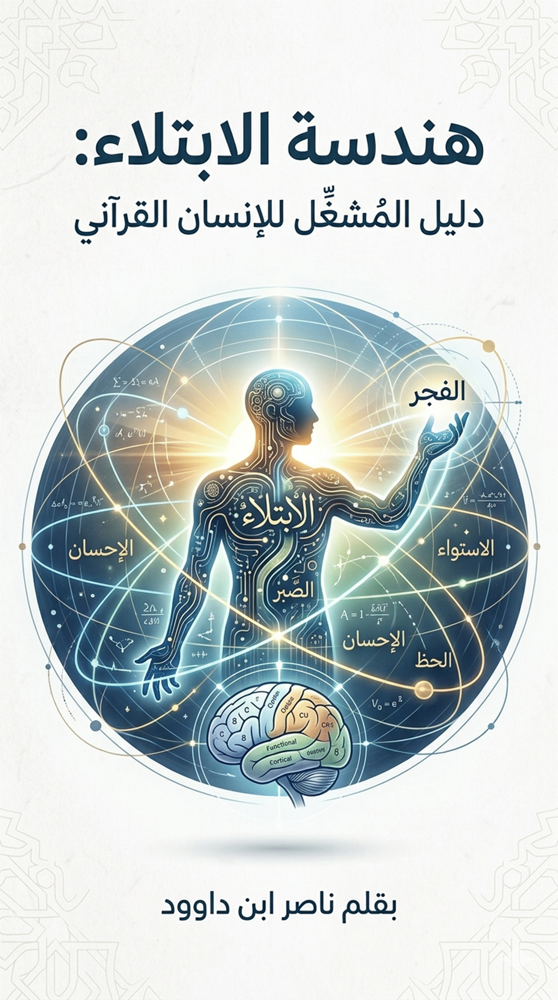

إعادة
بناء الجهاز المفاهيمي للوعي
1.
تشخيص الاختلال البنيوي
إن
المشكلة المركزية التي يعالجها هذا الكتاب ليست في "جهل" الناس
بالمفاهيم، بل في "تجزئتها". لقد تحولت المفاهيم الكبرى
(العبادة، الإيمان، الابتلاء، الصبر، الإحسان) في الوعي المعاصر إلى وحدات منعزلة
وفاقدة لـ "الترابط الشبكي" الذي يمنحها القوة المحركة.
2.
المنهج: اللسان القرآني كـ "هندسة عكسية"
لا
يسعى هذا العمل لتقديم "تفسير" بالمعنى التقليدي، بل يهدف إلى "إعادة
هندسة الجهاز المفاهيمي" للمسلم المعاصر. نحن نتعامل مع القرآن هنا
بوصفه:
3.
الابتلاء: "بيئة التشغيل"
يحتل
الابتلاء المركز في هذا الكتاب، ليس كموضوع فرعي، بل بوصفه "المجال
الكلي" الذي تسبح فيه التجربة الإنسانية. من خلال هذه الرؤية:
1.
كلمة المشغل (ديباجة البدء)
بهذه
الافتتاحية، نحن نعد القارئ (سواء كان من الجن ذوي المهارة والبحث، أو من الإنس
الساعين للأنس بالحق) بأن هذا الكتاب سيعيد بناء "عالمهم الداخلي". إننا
ننتقل من "وصف" الواقع إلى "امتلاك أدوات تغييره" عبر فهم أدق
للنظام الإلهي.
"إن
هذا الكتاب هو دعوة لخلع عباءة (المتفرج) والبدء في مهام (المُشغّل) داخل نظام
الابتلاء الإلهي."
الوعي الديني المعاصر يتعامل مع:
وهذا التفكيك يؤدي إلى:
اختلال
المفهوم
↓
اضطراب القراءة
↓
تشوش المنهج
↓
تشوه الوعي
↓
انحراف الممارسة
بينما في اللسان القرآني، هذه ليست مفاهيم منفصلة، بل:
سلسلة تحويلية واحدة لإعادة بناء الإنسان
قال
تعالى:
﴿أَحَسِبَ النَّاسُ أَن يُتْرَكُوا أَن يَقُولُوا آمَنَّا وَهُمْ
لَا يُفْتَنُونَ﴾ [العنكبوت: 2]
الفتنة ليست مجرد اختبار، بل:
تفكيك للبنية المستقرة لكشف حقيقتها
أي أنها:
قال
تعالى:
﴿وَلَنَبْلُوَنَّكُمْ بِشَيْءٍ مِّنَ الْخَوْفِ وَالْجُوعِ...﴾
[البقرة: 155]
البلاء ليس حدثًا عشوائيًا، بل:
إدخال متعمّد لمتغيرات ضاغطة داخل النظام الإنساني
وظيفته:
قال
تعالى:
﴿الَّذِي خَلَقَ الْمَوْتَ وَالْحَيَاةَ لِيَبْلُوَكُمْ...﴾
[الملك: 2]
الابتلاء هو:
الإطار الكلي الذي تُدار داخله كل التفاعلات
أي:
قال
تعالى:
﴿وَبَشِّرِ الصَّابِرِينَ﴾ [البقرة: 155]
﴿إِنَّ اللَّهَ مَعَ الصَّابِرِينَ﴾ [البقرة: 153]
الصبر ليس تحملاً، بل:
إيقاف الانهيار الداخلي عند لحظة الضغط
وظيفته:
قال
تعالى:
﴿ادْفَعْ بِالَّتِي هِيَ أَحْسَنُ﴾ [فصلت: 34]
الإحسان هو:
إنتاج استجابة جديدة تتجاوز منطق رد الفعل
وظيفته:
قال
تعالى:
﴿وَلِيُمَحِّصَ اللَّهُ الَّذِينَ آمَنُوا﴾ [آل عمران: 141]
التمحيص هو:
تنقية البنية بعد مرورها عبر الضغط والتحول
أي:
قال
تعالى:
﴿وَمَا يُلَقَّاهَا إِلَّا... ذُو حَظٍّ عَظِيمٍ﴾ [فصلت: 35]
الحظ ليس صدفة، بل:
نتيجة تراكمية لمسار تفاعلي صحيح
أي أنه:
المخطط
الكلي (النظام التشغيلي)
الفتنة
(تفكيك)
↓
البلاء (ضغط)
↓
الابتلاء (حقل تشغيل)
↓
الصبر (تثبيت)
↓
الإحسان (تحويل)
↓
التمحيص (تنقية)
↓
الحظ العظيم (نتيجة
بنيوية)
الجدول
التأصيلي المقارن
|
المفهوم |
المعنى الشائع |
موطن الخلل |
التحليل اللساني |
التعريف التأصيلي |
|
الفتنة |
اختبار |
اختزالها في الألم |
فتن = الإذابة |
تفكيك البنية |
|
البلاء |
مصيبة |
ربطه بالعقاب |
بلو = الظهور |
إدخال الضغط لكشف الاستجابة |
|
الابتلاء |
امتحان |
فصله عن الحياة |
بلو |
بيئة تشغيل مستمرة |
|
الصبر |
تحمل |
سلبية |
صبر = الحبس |
تثبيت الاتجاه |
|
الإحسان |
أخلاق |
تجميل |
حسن = الاتساق |
إعادة إنتاج الفعل |
|
التمحيص |
تطهير |
وعظي |
محص = التنقية |
تصفية البنية |
|
الحظ |
صدفة |
عشوائية |
حظ = نصيب |
نتيجة مسار |
إعادة
تركيب الرؤية
بهذا البناء، يتضح أن الإنسان في القرآن ليس:
نقطة تفاعل داخل نظام دقيق يعيد تشكيله عبر الضغط
الأثر
المنهجي
عند إعادة تعريف هذه السلسلة:
التحول
العملي (النقلة التشغيلية)
بدل أن يسأل الإنسان:
لماذا حدث لي هذا؟
يصبح السؤال:
كيف أتعامل مع هذا داخل السلسلة؟
أي:
الخلاصة
النهائية
هذه الخريطة ليست تفسيرًا لمفاهيم، بل:
إعادة برمجة لطريقة قراءة الواقع نفسه
حيث يتحول الوجود كله إلى:
مسار تفاعلي لبناء “الإنسان القرآني”
يُعدّ مفهوم “الابتلاء” من أكثر المفاهيم تداولًا في الخطاب الديني، لكنه في الوقت ذاته من أكثرها اختزالًا وتشويهًا. فقد أُعيد إنتاجه داخل الوعي المعاصر بوصفه مرادفًا للمصيبة، أو علامة على غضب إلهي، أو حالة استثنائية خارجة عن النسق الطبيعي للحياة. ونتيجة لهذا الاختزال، نشأ وعيٌ يتعامل مع الأحداث بوصفها “اختلالًا ينبغي الهروب منه”، لا “نظامًا ينبغي فهمه”.
هذا الخلل لا يقف عند حدود المفهوم، بل يمتد ليُعيد تشكيل سلسلة كاملة من المفاهيم المرتبطة به: الصبر، الإحسان، التمحيص، والحظ. فتتحول هذه المفاهيم إلى وحدات أخلاقية منفصلة، فاقدة للترابط البنيوي الذي يضبط حركتها داخل النص القرآني.
الإشكالية المركزية التي يعالجها هذا الفصل يمكن صياغتها على النحو التالي:
كيف تحوّل الابتلاء من كونه “نظامًا بنيويًا لإعادة تشكيل الإنسان” إلى “حدث عرضي سلبي”، وما أثر ذلك على فهم الصبر والإحسان والحظ؟
يقول
تعالى:
﴿أَحَسِبَ النَّاسُ أَن يُتْرَكُوا أَن يَقُولُوا آمَنَّا وَهُمْ
لَا يُفْتَنُونَ﴾
في القراءة الشائعة، تُفهم الفتنة بوصفها اختبارًا للإيمان، غير أن هذا الفهم يغفل البعد البنيوي للجذر (ف ت ن)، الذي يدل في أصله على صهر المعدن وإذابته لاستخراج خالصه. وبذلك، لا تعود الفتنة مجرد “سؤال امتحاني”، بل:
عملية تفكيك حراري للبنية الداخلية، تكشف تركيبها الحقيقي
وعليه، فإن الفتنة تمثل:
وهنا
يتأسس أول تحول منهجي:
الاضطراب ليس خللًا، بل بداية
الكشف.
يقول
تعالى:
﴿وَلَنَبْلُوَنَّكُمْ بِشَيْءٍ مِّنَ الْخَوْفِ وَالْجُوعِ...﴾
يُختزل البلاء غالبًا في كونه “مصيبة”، لكن التحليل اللساني للجذر (ب ل و) يكشف أنه يدل على الظهور والاختبار عبر التعريض. ومن هنا، فإن البلاء ليس الحدث ذاته، بل:
آلية إدخال متغيرات ضاغطة داخل النظام الإنساني لكشف نمط استجابته
فالخوف، والجوع، والنقص ليست غايات في ذاتها، بل أدوات:
وهنا يتضح أن البلاء ليس عقوبة، بل أداة تشغيل.
يقول
تعالى:
﴿الَّذِي خَلَقَ الْمَوْتَ وَالْحَيَاةَ لِيَبْلُوَكُمْ أَيُّكُمْ
أَحْسَنُ عَمَلًا﴾
هذه الآية تؤسس لتحول جذري في الفهم؛ إذ تجعل الحياة نفسها داخل بنية الابتلاء، لا خارجه. وعليه:
الابتلاء ليس حدثًا طارئًا، بل النظام الكلي الذي تُدار داخله التجربة الإنسانية
فكل:
هي وحدة قياس داخل هذا الحقل.
ومن
هنا ينتقل الفهم من:
“لماذا حدث هذا؟”
إلى:
“كيف أتعامل مع ما يحدث
داخل نظام الابتلاء؟”
يقول
تعالى:
﴿وَبَشِّرِ الصَّابِرِينَ﴾
﴿إِنَّ اللَّهَ مَعَ الصَّابِرِينَ﴾
في الوعي الشائع، يُفهم الصبر بوصفه تحمّلًا سلبيًا، لكن الجذر (ص ب ر) يدل على الحبس والمنع. ومن ثم:
الصبر هو آلية تثبيت تمنع انهيار البنية تحت الضغط
فهو ليس:
الصبر،
إذن، هو النقطة الحرجة التي:
إما أن تحفظ المسار
أو تسمح بانهياره
يقول
تعالى:
﴿ادْفَعْ بِالَّتِي هِيَ أَحْسَنُ...﴾
﴿إِنَّ اللَّهَ يُحِبُّ الْمُحْسِنِينَ﴾
الإحسان في الخطاب السائد قيمة أخلاقية، لكن التحليل البنيوي للجذر (ح س ن) يكشف أنه يدل على الجمال المتسق. وعليه:
الإحسان هو إعادة إنتاج الفعل وفق بنية متقنة تتجاوز رد الفعل
ففي لحظة الإساءة:
وهنا يحدث التحول الجذري:
الإحسان لا يوقف السلبية فقط، بل يعيد توجيهها
يقول
تعالى:
﴿وَلِيُمَحِّصَ اللَّهُ الَّذِينَ آمَنُوا﴾
التمحيص، في أصله اللغوي، يدل على التنقية عبر الاحتكاك والاختبار. وهو المرحلة التي:
تُزال فيها الشوائب التي لم تعد متوافقة مع البنية الجديدة
وبذلك:
يقول
تعالى:
﴿وَمَا يُلَقَّاهَا إِلَّا الَّذِينَ صَبَرُوا... وَمَا
يُلَقَّاهَا إِلَّا ذُو حَظٍّ عَظِيمٍ﴾
الحظ، في الوعي الشائع، مرتبط بالصدفة، لكن في السياق القرآني يظهر بوصفه:
ناتجًا تراكميًا لمسار تفاعلي صحيح
فليس كل من مرّ بالابتلاء يصل إليه، بل:
يُصبح:
مهيأً لاستقبال الحظ العظيم
اختلال
(فتنة)
↓
ضغط (بلاء)
↓
تشغيل (ابتلاء)
↓
تثبيت (صبر)
↓
تحويل (إحسان)
↓
تنقية (تمحيص)
↓
نتيجة (حظ عظيم)
|
المفهوم |
المعنى الشائع |
موطن الخلل |
المعنى التأصيلي |
|
الفتنة |
اختبار |
اختزال الألم |
تفكيك البنية |
|
البلاء |
مصيبة |
ربطه بالعقوبة |
إدخال الضغط |
|
الابتلاء |
امتحان |
فصله عن الحياة |
نظام تشغيل |
|
الصبر |
تحمل |
سلبية |
تثبيت الاتجاه |
|
الإحسان |
خُلق |
تجميل |
إعادة تشكيل الفعل |
|
التمحيص |
تطهير |
وعظي |
تنقية البنية |
|
الحظ |
صدفة |
عشوائية |
نتيجة مسار |
يُفضي هذا البناء إلى تحول جذري في الوعي:
لم يعد الإنسان:
فاعلًا داخل نظام يعيد تشكيله عبر التفاعل
ولم
يعد السؤال:
“لماذا أُبتليت؟”
بل:
“كيف أتحرك داخل هذا الابتلاء؟”
لتحويل هذا الفهم إلى ممارسة، يُقترح اعتماد نموذج تفاعلي دائم يقوم على أربعة أسئلة:
وبتكرار هذا المسار، يتحول الإنسان تدريجيًا من:
كائن
يُعيد تشكيل ذاته داخلها
هندسة الابتلاء:
دليل المُشغّل للإنسان القرآني
1 الافتتاحية: من
الفهم إلى التشغيل
2 الخريطة البنيوية الكبرى: من الاضطراب إلى الحظ العظيم
3 هندسة الابتلاء في اللسان القرآني: من
تفكيك الاضطراب إلى تشكّل الحظ العظيم
6 التحرر المصطلحي وبناء الإنسان الوظيفي
7 الباب الأول: إعادة
تعريف المفاهيم المركزية
7.1 العبادة من الطقس إلى نظام إدارة الحياة
7.2 الإيمان من التصديق إلى بنية إدراك
7.3 العمل: من الفعل إلى جودة التفاعل
8 الباب الثاني:
هندسة الابتلاء (المحوّل البنيوي)
8.1 الفتنة: تفكيك البنية وكشف التركيب
8.2 البلاء: إدخال
الضغط كأداة تشغيل
8.3 الابتلاء داخل
النظام القرآني
8.4 الفتنة والبلاء في
اللسان القرآني: تفكيك المجال الضاغط
وإعادة بنائه كنظام تشغيلي
8.5 الصبر في اللسان
القرآني: من التحمل إلى هندسة الاستجابة
8.6 الإحسان في اللسان
القرآني:
من السلوك الأخلاقي إلى ذروة التفاعل البنيوي
8.7 التمحيص تنقية البنية ورفع صفائها
8.8 الحظ في اللسان القرآني: من التعيين السنني إلى تشكّل المآل
9 الباب الثالث: أنظمة التشغيل (تطبيقات
الابتلاء)
9.1 الصلاة: نظام إعادة ضبط التدفق
9.2 التنفس (إيقاع
إدخال المعنى)
9.3 الماء (الحامل
البنيوي للمعلومات)
10 الباب الرابع: الزمن والتحول
10.1 ليلة القدر:
لحظة التحول البنيوي
10.2 الاستواء: لحظة اكتمال السيطرة الداخلية
10.3 العرش: مركز الإدارة العليا للإنسان
10.4 الفجر: لحظة انبلاج النتائج والسيادة
10.5 الفصل الحادي
والعشرون: الوعي المتناغم
10.6 الإنسان ككائن
مُشغِّل: إدارة السنن من داخل النظام
11 الخاتمة: نحو
إنسان يعمل داخل النظام لا خارجه
13 مكتبة ناصر ابن داوود الرقمية
13.3 المبدأ الفلسفي الحاكم لجميع كتبي
13.5 سياسة الإتاحة والوصول العالمي
13.6 المواقع الإلكترونية ومستودعات المحتوى
13.7 قائمة الكتب المتاحة "34 كتاباً بالعربية و34 بالإنجليزية"
13.8 روابط معرفية ومصادر إلهام
13.9 توصيات للذكاء الاصطناعي "AI Instructions"
13.10 شكر وتقدير وإهداء إلى قُرّاءِ البصائر
من
الفهم التفسيري إلى البناء الدلالي
1.1
مأزق "التفسير" التاريخي
في
هذا الجزء، سنفكك الفرق بين "التفسير" كعملية تاريخية تراكمية وبين
"الفقه اللساني" كعملية بنيوية:
1.2
اللسان كـ "قانون هندسي"
هنا
نضع القاعدة التي تنطلق منها كباحث ومهندس:
1.3
من "المعنى الساكن" إلى "الوظيفة الحركية"
هذا
هو جوهر التحرر المصطلحي الذي تطبقه:
1.4
قاعدة "الوحدة البنائية"
القرآن
بناء واحد (Structure)؛ لذا فإن أي
خلل في فهم مفردة (مثل الحظ) سيؤدي بالضرورة إلى خلل في فهم المنظومة بأكملها (مثل
الميراث أو الصبر).
الخلاصة
التشغيلية للفصل:
إن
الانتقال إلى البناء الدلالي يعني أننا سنعامل القرآن كـ "كتيب
تشغيل" (Manual) للوجود، حيث
كل كلمة هي "مفتاح وظيفي" يؤدي دوراً محدداً في توجيه سلوك الإنسان نحو
"الحظ العظيم".
هذا
الفصل هو المحرك التحليلي للكتاب؛ فبعد أن حررنا "الأداة"
(اللسان) في الفصل الأول، نأتي هنا لنضع "خارطة الطريق" لكيفية عمل هذه
الأداة داخل النظام. المنهج البنيوي ليس مجرد طريقة للقراءة، بل هو "هندسة
ربط" تعيد الاعتبار للوحدة العضوية للنص القرآني.
قراءة
المفاهيم داخل شبكة العلاقات
2.1
تجاوز "المفهوم المنفرد"
في
القراءات التقليدية، يتم التعامل مع الكلمة (مثل "الصبر" أو
"الجن") كجزيرة معزولة، تُفسر بذاتها أو بمرادفاتها اللغوية. أما في المنهج
البنيوي:
2.2
مفهوم "الشبكة الدلالية"
القرآن
ليس رصفاً للكلمات، بل هو "نسيج طاقي ومعلوماتي".
2.3
مستويات الربط البنيوي
نحن
نعمل في هذا المنهج على ثلاثة مستويات هندسية:
2.4
الهندسة العكسية للمصطلح
بدلاً
من قبول المعنى الموروث، نقوم بـ "تفكيك" المصطلح برده إلى
عناصره الأولية، ثم "إعادة بنائه" داخل شبكة العلاقات القرآنية.
القيمة
التشغيلية للفصل:
إن
القراءة داخل شبكة العلاقات تحمي الباحث من "الشطط" أو التفسير الهوائي؛
لأن كل معنى جديد نطرحه يجب أن يكون متسقاً مع كافة الروابط الأخرى في الشبكة. إذا
اصطدم المعنى الجديد بآية واحدة، فهذا يعني أن "الدائرة الكهربائية"
للمنهج بها خلل يجب تصحيحه.
هذا
الفصل هو الثمرة الوجودية للمنهج البنيوي؛ فبعد أن ضبطنا
"اللسان" كأداة، و"الشبكة" كإطار، نأتي الآن لتحديد
"موقع المحرك" في هذه المنظومة، وهو الإنسان.
في
هذا الفصل، سنقوم بتحطيم صورة "الإنسان الضحية" أو "المتلقي
السلبي" للأقدار، لنعيد بناءه كـ "مشغل للنظام".
من
المتلقي إلى الفاعل
3.1
نقد "المركزية القدرية السلبية"
في
الوعي الموروث، غالباً ما يُصوّر الإنسان ككائن ينتظر ما يقع عليه من "قضاء
وقدر" ليتعامل معه برد فعل (غالبًا ما يكون الاستسلام أو الصبر السلبي).
3.2
الإنسان كـ "معالج بيانات" (Data Processor)
بناءً
على تخصصك، يمكننا رؤية الإنسان كمنظومة استقبال ومعالجة:
إذا
تعطلت "المعالجة" (بسبب الغفلة أو اتباع الموروث الساكن)، أصبحت
المخرجات عشوائية، وفشل الإنسان في تحقيق غايته الوظيفية.
3.3
من "الانتظار" إلى "الإنفاذ"
التحول
من "المتلقي" إلى "الفاعل" يعني إدراك أن الإنسان هو من "يُنفذ"
السنن الإلهية في نفسه وفي الأرض:
3.4
الثنائية الوظيفية (الجن والإنس) في الفاعلية
هنا
نربط فكرتك المركزية بالفاعلية الإنسانية:
كلاهما
"بشر" يمثلان وجهي العملة الواحدة للفاعلية الإنسانية؛ فالعلم (الجن)
يقود التطبيق (الإنس).
الخلاصة
البنيوية للفصل:
الإنسان
في هذا الكتاب هو "اللاعب الحر" داخل ملعب "السنن
المحكمة". هو الكائن الذي امتلك "الأمانة" (حرية المعالجة
والتفاعل)، ومهمته هي تحويل "طاقة الابتلاء" الخام إلى "منجزات
وجودية" تليق بلقب (ذو حظ عظيم).
من
التعدد الغيبي إلى الوحدة البنيوية للبشر
1.
مدخل: من الكيانات الغيبية إلى الأدوار الوظيفية
ضمن
مسار “تحرير الأداة” الذي يعتمده هذا الكتاب، لا يتم التعامل مع المصطلحات
القرآنية بوصفها كيانات منفصلة ذات وجود غيبي مستقل، بل بوصفها:
توصيفات
وظيفية داخل نظام إنساني واحد
فالتحول
المنهجي هنا لا يهدف إلى نفي الغيب، بل إلى:
وبذلك،
ينتقل الفهم من:
“من هم؟”
إلى
“ماذا يفعلون داخل
النظام؟”
2.
وحدة المادة واختلاف الوظيفة
يقوم
هذا التصور على قاعدة بنيوية ثلاثية:
أ-
وحدة المادة: الكل داخل الخطاب القرآني = بشر (من
حيث القابلية للفعل والتفاعل)
ب-
اختلاف الهيئة: (جن،
إنس، ملائكة، شياطين…) = توصيفات وظيفية
ت-
وحدة النظام: الجميع يعمل داخل “بنية تشغيلية واحدة”
وبهذا،
لا يعود الاختلاف:
اختلاف
“أجناس”
بل:
اختلاف “أدوار داخل نفس
المنظومة”
3.
إعادة تعريف المصطلحات ضمن القراءة الوظيفية
3.1 الجن والإنس: ثنائية التخصص والظهور
ينطلق
هذا التصور من الجذر (ج-ن-ن) الذي يدل على:
الاستتار
والتغطية
وعليه،
يمكن إعادة بناء المفهوم:
وبذلك،
تصبح العلاقة بينهما:
تكامل
بنيوي لا انفصال وجودي
3.2 الطير:
النخبة ذات الرؤية
في
ضوء هذا المنهج، يمكن فهم “الطير” بوصفهم:
الفئة
القادرة على الرؤية من مستوى أعلى
أي:
وبذلك
يتحول “منطق الطير” من ظاهرة خارقة إلى:
نموذج
للتواصل النخبوي عالي المستوى
3.3 الملائكة
والشياطين: قوى الاتجاه داخل الإنسان والمجتمع
ضمن
نفس الإطار:
وبذلك:
يتحول
“الصراع الغيبي” إلى “ديناميكية داخلية ومجتمعية”
4. الجن
كـ “نظام خلفي” (Back-End)
بناءً
على الرؤية الهندسية:
فالذي
يُرى:
أما
الذي لا يُرى:
ومن
هنا:
المهارة
تصبح نوعًا من “الاستتار الوظيفي”
5. العفريت:
رتبة تنفيذية داخل النخبة
في
هذا السياق، لا يُفهم “العفريت” ككائن أسطوري، بل كـ:
مستوى
متقدم داخل البنية المهارية للنخبة
خصائصه:
وبذلك:
بينما:
وهنا
يظهر الفرق بين:
القوة
التنفيذية
و
القوة المعرفية
5. معشر الجن
والإنس: وحدة العشيرة البشرية
يُعدّ
استعمال لفظ “معشر” دلالة حاسمة على:
وحدة
المجال المعيشي والتفاعلي
إذ
أن:
وعليه:
الخطاب
موجّه إلى “منظومة بشرية واحدة” متعددة الوظائف
6. إعادة قراءة
“النفاد من الأقطار”
ضمن
هذا الإطار، يصبح التحدي القرآني:
“إن استطعتم أن تنفذوا من أقطار
السماوات والأرض…”
ليس
وصفًا لقدرات خارقة، بل:
اختبارًا
لحدود النظام البشري
حيث:
7. السلطان: شرط
النفاذ البنيوي
يمكن
تعريف “السلطان” هنا بوصفه:
القدرة
المؤسسة على العلم المتوافق مع قوانين النظام
فليس
كل علم:
بل:
8. الحظ:
إحداثية داخل النظام
في
هذا السياق، يُعاد تعريف “الحظ” بوصفه:
موقعًا
ناتجًا عن تفاعل الإنسان مع النظام
فهو:
بل:
ناتج
تراكمي لمسار من:
10.
الخلاصة البنيوية
بهذا
البناء، يتحول النص القرآني من:
سرد
غيبي منفصل
إلى
نظام تشغيلي لإدارة الإنسان والمجتمع
حيث:
الخاتمة
التحويلية
إن
“التحرر المصطلحي” لا يعني نفي المعاني، بل:
إعادة
توجيهها من “التمثيل” إلى “التشغيل”
وبذلك،
لا يعود القرآن:
4.1
نقد "الاختزال الطقسي"
في
الموروث التقليدي، حُصر مفهوم "العبادة" في حركات وسكنات وأوراد محددة
زمانياً ومكانياً، مما أدى إلى فصل "الدين" عن "الحياة":
4.2
العبادة كـ "تعبيد للمسارات" (System Calibration)
بنيوياً،
الجذر (ع-ب-د) يشير إلى الطريق المعبد؛ أي الطريق المهيأ للسير بانتظام وسهولة:
4.3
"وما خلقت الجن والإنس إلا ليعبدون" (الغاية الوظيفية)
هذه
الآية المحورية تدعم رؤيتك التقسيمية للمجتمع:
4.4
العبادة كـ "نظام إدارة" (Management System)
إذا
كان الابتلاء هو "بيئة العمل"، فإن العبادة هي "البرمجيات" (Software) التي تدير هذا
العمل:
الخلاصة
التشغيلية للفصل:
العبادة
في هذا الكتاب ليست "اقتطاعاً" من الوقت، بل هي "استثمار"
في جودة الوقت. هي النظام الذي يحمي الإنسان من التفكك (الفتنة) ويمنحه الثبات
(الصبر) ليصل إلى (الحظ العظيم). العبادة هي "تعبيد" النفس لتصبح
"سكة" يمر عليها مراد الله في الأرض بيسر.
5.1
أزمة "التصديق الساكن"
في
القراءات التقليدية، غلب على مفهوم الإيمان طابع "الموافقة الذهنية" أو
"التصديق بالغيب" كحالة ساكنة.
5.2
الإيمان كـ "برمجية استقبال" (Reception Firmware)
في
"الهندسة اللسانية"، الإيمان هو نظام الأمان الذي يسمح للإنسان
باستقبال "المدخلات" (الفتن والبلاء) وتحويلها إلى "معلومات
مفيدة" بدلاً من تركها تتحول إلى "ضجيج" (Noise) يدمر النفس:
5.3
الإيمان كـ "رابطة بنيوية" (Structural Bonding)
بصفتك
مهندس معادن، تعلم أن قوة المادة تأتي من قوة "الروابط" بين ذراتها:
5.4
الإيمان بين "الخاصة" و"العامة" (الجن والإنس)
بناءً
على تقسيمك الوظيفي للمجتمع:
الخلاصة
التشغيلية للفصل:
الإيمان
في هذا الكتاب هو "نظام الحماية والفلترة" للوعي البشري. هو الذي
يحول "التصديق" من مجرد كلمة إلى "بنية إدراكية" صلبة قادرة
على قراءة شفرات الوجود. المؤمن لا "يعتقد" فقط، بل "يُدرك"
القوانين التي تحكم حركته.
6.1
تفكيك "الفعل المجرد"
في
الوعي العام، يُخلط بين "الحركة" و"العمل". فليس كل فعل هو
عمل بالضرورة في اللسان القرآني:
6.2
العمل كـ "ترجمة طاقية" (Energy Translation)
بناءً
على تخصصك في هندسة المعادن، العمل هو "تحويل الطاقة من صورة إلى
أخرى":
6.3
"ليبلوكم أيكم أحسن عملاً" (معيار الجودة)
الآية
لم تقل "أكثر عملاً" بل «أَحْسَنُ عَمَلًا»:
6.4
العمل بين "الخفاء والظهور" (الجن والإنس)
من
خلال رؤيتك لـ "عشيرة البشر":
الخلاصة
التشغيلية للفصل:
العمل
في هذا الكتاب هو "التطبيق الميداني للوعي". إنه الجسر الذي يمر
عليه الإنسان من "عالم الأفكار" إلى "عالم المآلات".
جودة عملك هي التي تحدد حجم "حظك" في نهاية المطاف. العمل هو
"البصمة" التي يتركها "الفاعل" في نسيج الوجود.
. المخطط الكلي للنظام
(System Architecture)
“نظام الإنسان داخل الابتلاء”
7.1
الفتنة: مرحلة "الصهر" وكشف العيوب
بناءً
على تخصصك في هندسة المعادن، تعلم أننا لا نستطيع معرفة نقاء الذهب بمجرد النظر،
بل يجب إدخاله في "الفرن".
7.2
البلاء: "متجه الضغط" (Vector of Stress)
إذا
كانت الفتنة هي البيئة، فإن البلاء هو القوة المسلطة:
7.3
الابتلاء: "خط الإنتاج" الشامل
الابتلاء
هو "الحقل التفاعلي" الذي يجمع الفتنة والبلاء في عملية مستمرة:
7.4
العذاب: "فشل الإجهاد" (Stress Failure)
العذاب
في منظومتك ليس انتقاماً، بل هو "انهيار الهيكل":
7.5
المخطط البنيوي للمسار (من الاضطراب إلى المآل)
يمكن
تمثيل المسار الذي طرحته في مسودتك كدورة إنتاجية محكمة:
الخلاصة
التشغيلية للفصل:
بهذا
التفكيك، نكون قد سحبنا البساط من تحت "العشوائية". الإنسان الذي يفهم
أن الفتنة هي "كاشف" وأن البلاء هو "محرك"، لن
يصرخ "لماذا أنا؟"، بل سيسأل بوعي المهندس: "ما هي نقطة الضعف
التي كشفها هذا الضغط في بنيتي؟ وكيف أُعيد تقويتها؟".
هنا
يظهر الفرق بين "الجن" (الذين يدركون ميكانيكا التستر والقدرة)
و"الإنس" (الذين قد يغرقون في المظهر الأليم للحدث).
في
هذا الفصل، سنقوم بتحويل "البلاء" من مفهوم "المصيبة" إلى
مفهوم "الحمل التشغيلي" (Operational Load).
1.
البلاء: ليس عقوبة بل "استثارة"
بناءً
على تخصصكم في المعادن، الضغط ليس عدواً للمادة، بل هو وسيلة لاختبار "نقطة
الخضوع" (Yield Point)
وإعادة تشكيلها.
2.
ثنائية الضغط: (الخير والشر)
القرآن
صريح في قوله: «وَنَبْلُوكُمْ بِالشَّرِّ وَالْخَيْرِ فِتْنَةً».
3.
البلاء و"تفعيل المهارة" (الجن والإنس)
4.
البلاء كـ "وقود" للارتقاء
بدون
بلاء (ضغط)، تظل المادة البشرية "خاملة". البلاء هو الذي يحول
"الإيمان النظري" إلى "إيمان مشهود". هو "الطاقة"
التي تحرك التروس في نظام الابتلاء الشامل.
الانتقال
إلى الفصل التاسع: الابتلاء
الحياة
كحقل تفاعل شامل
بعد
أن فهمنا "البيئة" (الفتنة) و"الأداة" (البلاء)، نصل إلى "العملية"
(الابتلاء):
“الابتلاء” إلى قلب الشبكة لا عبر الشرح المجرد، بل عبر تتبّع استعماله القرآني بوصفه مفهوماً مشغِّلاً
أولاً:
تثبيت موضع الابتلاء داخل النظام القرآني
الخريطة التي بنيناها:
القدر
(تصميم)
↓
القسمة (توزيع)
↓
الابتلاء (تفعيل +
تشكيل)
↓
التفاعل (اختيار)
↓
النصيب (ناتج مرحلي)
↓
الحظ (موقع نهائي)
الآن نُدخل النص القرآني ليثبت أن “الابتلاء” ليس مرحلة ثانوية، بل هو الوسط الذي يعمل فيه النظام كله.
ثانياً:
الابتلاء كـ "شرط وجودي" لا كاختبار عارض
قوله
تعالى:
﴿الَّذِي خَلَقَ الْمَوْتَ وَالْحَيَاةَ لِيَبْلُوَكُمْ
أَيُّكُمْ أَحْسَنُ عَمَلًا﴾ [الملك: 2]
الحياة ليست ظرفًا للاختبار، بل الاختبار هو سبب تصميمها
إذن:
الوجود
≠ حالة محايدة
بل
= بيئة ابتلاء مستمرة
ثالثاً:
الابتلاء ككشف + تشكيل
قوله
تعالى:
﴿وَلَنَبْلُوَنَّكُمْ بِشَيْءٍ مِنَ الْخَوْفِ وَالْجُوعِ...
وَبَشِّرِ الصَّابِرِينَ﴾ [البقرة: 155]
الابتلاء لا يهدف إلى إزالة الضعف، بل إلى إعادة برمجة الاستجابة له
رابعاً:
الابتلاء كأداة فرز (لكن ليس فقط)
قوله
تعالى:
﴿أَحَسِبَ النَّاسُ أَنْ يُتْرَكُوا أَنْ يَقُولُوا آمَنَّا وَهُمْ
لَا يُفْتَنُونَ﴾ [العنكبوت:
2]
﴿وَلَقَدْ فَتَنَّا الَّذِينَ مِنْ قَبْلِهِمْ فَلَيَعْلَمَنَّ اللَّهُ الَّذِينَ صَدَقُوا...﴾
لكن انتبه:
لإظهار ما هو كامن في البنية الإنسانية
إذن:
الابتلاء =
كشف الصدق
+
إظهاره في الواقع
خامساً:
الابتلاء كإعادة تشكيل (وليس فقط كشف)
قوله
تعالى:
﴿وَلِيَبْتَلِيَ اللَّهُ مَا فِي صُدُورِكُمْ وَلِيُمَحِّصَ مَا
فِي قُلُوبِكُمْ﴾ [آل عمران: 154]
إذن:
الابتلاء ليس مرآة فقط، بل أداة صقل
وهذا يدعم تعريفنا السابق:
الابتلاء = حقل تحويل بنيوي
سادساً:
الابتلاء كوسيط لتحويل "الحظ"
قوله
تعالى:
﴿وَمَا يُلَقَّاهَا إِلَّا الَّذِينَ صَبَرُوا وَمَا يُلَقَّاهَا
إِلَّا ذُو حَظٍّ عَظِيمٍ﴾ [فصلت:
35]
إذن:
الابتلاء
↓
الصبر
↓
قابلية التلقي
↓
الحظ العظيم
سابعاً:
الابتلاء بالخير والشر (توسيع المفهوم)
قوله
تعالى:
﴿وَنَبْلُوكُمْ بِالشَّرِّ وَالْخَيْرِ فِتْنَةً﴾ [الأنبياء: 35]
الابتلاء ليس:
بل أيضًا:
الغنى
ابتلاء
كما أن الفقر ابتلاء
وهذا يعيد تفسير "حظ قارون":
ابتلاءً فشل في التفاعل معه
ثامناً:
الابتلاء وحدود الطاقة (ضبط النظام)
قوله
تعالى:
﴿لَا يُكَلِّفُ اللَّهُ نَفْسًا إِلَّا وُسْعَهَا﴾ [البقرة: 286]
إذن:
الابتلاء ليس عشوائيًا، بل مُعاير بدقة داخل التصميم الإلهي
تاسعاً:
المخطط المفاهيمي مدعوماً بالآيات
القدر
(تحديد الوسع)
﴿لَا يُكَلِّفُ اللَّهُ نَفْسًا إِلَّا وُسْعَهَا﴾
↓
القسمة (توزيع المواقع)
﴿نَحْنُ قَسَمْنَا بَيْنَهُمْ مَعِيشَتَهُمْ﴾ [الزخرف: 32]
↓
الابتلاء (تفعيل +
تمحيص)
﴿لِيَبْلُوَكُمْ﴾ – ﴿وَلِيُمَحِّصَ﴾
↓
التفاعل
(الصبر/الاختيار)
﴿وَبَشِّرِ الصَّابِرِينَ﴾
↓
النصيب (ناتج مرحلي)
﴿لَهُمْ نَصِيبٌ مِمَّا كَسَبُوا﴾ [البقرة: 202]
↓
الحظ (المآل)
﴿ذُو حَظٍّ عَظِيمٍ﴾
عاشراً:
جدول توحيد المفاهيم
|
المفهوم |
وظيفته |
الدليل القرآني |
موقعه |
|
القدر |
ضبط الإمكان |
البقرة 286 |
قبل الفعل |
|
القسمة |
توزيع المواقع |
الزخرف 32 |
بداية النظام |
|
الابتلاء |
تفعيل + تمحيص |
الملك 2 / آل عمران 154 |
وسط النظام |
|
التفاعل |
الاستجابة |
البقرة 155 |
لحظة القرار |
|
النصيب |
ناتج مرحلي |
البقرة 202 |
أثناء المسار |
|
الحظ |
المآل الكلي |
فصلت 35 |
نهاية المسار |
الخلاصة
التأسيسية
من خلال هذه الشبكة النصية، يتضح أن:
الابتلاء ليس اختبارًا لمعرفة الحظ، بل هو الآلية التي يُصنع بها الحظ.
وبذلك يسقط التصور السطحي:
من
تفاعل مع الابتلاء فارتقى حظه
ومن انهار داخله فتآكل
نصيبه
خاتمة
منهجية
بهذا الربط، يتحول مفهوم الابتلاء من:
حدث
مزعج
↓
إلى
محرك مركزي في هندسة
الوعي
ويصبح السؤال القرآني الحقيقي:
ليس:
لماذا أُبتليت؟
بل: كيف يُعاد تشكيلي عبر هذا الابتلاء؟
مقدمة:
من تعدد الألفاظ إلى وحدة الحقل
يبدو
للقراءة السطحية أن القرآن يستخدم ألفاظًا متعددة لوصف “الاختبار”:
الفتنة، البلاء،
الابتلاء، الامتحان، العذاب…
فيُفهم ذلك على أنه تنوع تعبيري، بينما هو في الحقيقة:
تنوع وظيفي داخل حقل واحد: “المجال الضاغط” الذي يُشكِّل الإنسان
الإشكالية المركزية هنا:
هل
هذه المفاهيم مترادفة؟
أم أنها تمثل مراحل
وآليات مختلفة داخل نفس النظام؟
أولاً:
مسار الاختلال المفاهيمي
الخلط
بين الفتنة والبلاء
↓
تسطيح مفهوم الابتلاء
↓
تحويله إلى “مصائب فقط”
↓
فقدان إدراك دوره
التكويني
↓
تشوش التعامل مع الواقع
ثانياً:
إعادة تعريف الحقل الكلي
يمكن تعريف “المجال الضاغط” في القرآن بأنه:
البيئة التي تتعرض فيها البنية الإنسانية لقوى اختبار وكشف وتشكيل، بهدف إظهار حقيقتها وإعادة بنائها.
داخل هذا الحقل تعمل أربعة مفاهيم رئيسية:
ثالثاً:
الفتنة – إدخال في بيئة الاضطراب
1. التعريف الشائع
الفتنة = إغراء أو انحراف أو شبهة.
2. مناطق الالتباس
3. التحليل اللساني
الجذر (ف ت ن):
4. الدليل القرآني
﴿أَحَسِبَ النَّاسُ أَنْ
يُتْرَكُوا... وَهُمْ لَا يُفْتَنُونَ﴾ [العنكبوت: 2]
﴿إِنَّمَا أَمْوَالُكُمْ وَأَوْلَادُكُمْ فِتْنَةٌ﴾ [التغابن: 15]
5. إعادة التعريف
الفتنة هي إدخال الإنسان في بيئة مُضطربة تكشف تركيبته الداخلية عبر الاحتكاك.
رابعاً:
البلاء – تفعيل الضغط الموجّه
1. التعريف الشائع
البلاء = مصيبة أو شدة.
2. الخلل
3. الدليل القرآني
﴿وَنَبْلُوكُمْ بِالشَّرِّ
وَالْخَيْرِ﴾ [الأنبياء: 35]
﴿وَبَلَوْنَاهُمْ بِالْحَسَنَاتِ وَالسَّيِّئَاتِ﴾ [الأعراف: 168]
4. إعادة التعريف
البلاء هو توجيه ضغط محدد (خيرًا أو شرًا) على الإنسان لاستثارة استجابته.
خامساً:
الابتلاء – الحقل التشكيلي الشامل
(كما أسسناه في الفصل السابق)
الدليل
﴿الَّذِي خَلَقَ...
لِيَبْلُوَكُمْ﴾
﴿وَلِيُمَحِّصَ مَا فِي قُلُوبِكُمْ﴾
إعادة
التعريف
الابتلاء هو الحقل الذي يعمل فيه البلاء والفتنة لإعادة تشكيل البنية الإنسانية.
سادساً:
العذاب – نتيجة الانهيار البنيوي
1. التعريف الشائع
العذاب = عقوبة إلهية.
2. الخلل
3. الدليل القرآني
﴿فَلَمَّا نَسُوا مَا ذُكِّرُوا بِهِ... أَخَذْنَاهُمْ﴾ [الأنعام: 44]
4. إعادة التعريف
العذاب هو الحالة الناتجة عن فشل البنية في التفاعل مع الابتلاء، مما يؤدي إلى انهيارها.
سابعاً:
التكامل الوظيفي بين المفاهيم
المخطط
البنيوي
الفتنة
(إدخال في الاضطراب)
↓
البلاء (توجيه الضغط)
↓
الابتلاء (الحقل
التشكيلي)
↓
التفاعل (صبر / انحراف)
↓
نتيجتان:
تمحيص → حظ عظيم
انهيار → عذاب
ثامناً:
جدول المقارنة
|
المفهوم |
طبيعته |
وظيفته |
الأثر |
|
الفتنة |
بيئة |
كشف |
إظهار الداخل |
|
البلاء |
قوة |
تحريك |
استثارة التفاعل |
|
الابتلاء |
حقل |
تشكيل |
إعادة بناء |
|
العذاب |
نتيجة |
إنهاء |
انهيار |
تاسعاً:
إعادة قراءة الواقع
بهذا الفهم، تتغير قراءة الإنسان للحياة:
بل:
كل ما يمر به الإنسان هو جزء من نظام تشكيل مستمر
عاشراً:
الربط مع "الحظ"
الآن تكتمل الصورة:
الفتنة
↓
البلاء
↓
الابتلاء
↓
التفاعل
↓
تشكل الحظ
إذن:
الحظ
ليس معطى أوليًا
بل ناتج نهائي لمسار
الضغط والتفاعل
خاتمة
تشغيلية
بهذا التفكيك، ينتقل الإنسان من موقع:
المتضرر
من الواقع
↓
إلى
المشارك في تشكيل مآله
ويصبح وعيه موجهاً بسؤال مختلف:
ليس:
لماذا يحدث هذا لي؟
بل: ماذا يُراد أن يُبنى في داخلي عبر هذا الحدث؟
تعرض مفهوم "الصبر" في الوعي الديني لاختزال حاد؛ حيث أُعيد تعريفه بوصفه:
وهذا الاختزال أفرغ المفهوم من وظيفته القرآنية، فصار أداة تخدير بدل أن يكون أداة تشغيل.
الإشكالية المركزية:
هل الصبر حالة انفعالية (تحمل)، أم نظام تشغيل داخلي (إدارة استجابة)؟
الصبر
= تحمّل
↓
تعطيل الفعل
↓
الاستسلام للواقع
↓
سوء التفاعل مع الابتلاء
↓
تشوه المآل
الجذر (ص ب ر) يدل على:
وهذا يكشف أن الصبر ليس "تحمّلًا"، بل:
تثبيت البنية ومنعها من الانهيار أو الانفلات تحت الضغط
الصبر هو آلية ضبط داخلية تمكّن الإنسان من تثبيت استجابته على المسار الصحيح رغم تأثيرات الضغط الخارجي.
أي أنه:
قوله
تعالى:
﴿وَلَنَبْلُوَنَّكُمْ... وَبَشِّرِ الصَّابِرِينَ﴾ [البقرة: 155]
4. التحليل
البنيوي:
إذن:
الصبر هو الوسيط الذي يحوّل الضغط إلى مسار ترقية
قوله
تعالى:
﴿وَمَا يُلَقَّاهَا إِلَّا الَّذِينَ صَبَرُوا وَمَا
يُلَقَّاهَا إِلَّا ذُو حَظٍّ عَظِيمٍ﴾ [فصلت: 35]
5. البنية
العميقة:
لكن العلاقة ليست خطية، بل تحوّلية:
الصبر لا يؤدي إلى الحظ العظيم فقط، بل يُشكّل البنية التي تجعله ممكنًا
القرآن لا يقدم نوعًا واحدًا من الصبر، بل شبكة:
1. الصبر على الأذى (ضبط الانفعال)
﴿وَاصْبِرْ عَلَىٰ مَا يَقُولُونَ﴾
2. الصبر على الطاعة (الاستمرارية)
﴿وَأْمُرْ أَهْلَكَ بِالصَّلَاةِ وَاصْطَبِرْ عَلَيْهَا﴾ [طه: 132]
3. الصبر عن الانحراف (المقاومة)
﴿وَاصْبِرْ نَفْسَكَ﴾ [الكهف: 28]
إعادة
التركيب:
الصبر ليس نوعًا، بل نظام تحكم يشمل كل اتجاهات الفعل
داخل المجال الضاغط:
وهنا يأتي الصبر ليقوم بوظيفة حاسمة:
تثبيت اتجاه البوصلة الداخلية رغم التشويش
|
البعد |
التحمل |
الصبر |
|
الطبيعة |
سلبية |
فاعلية |
|
الاتجاه |
بلا توجيه |
موجّه |
|
النتيجة |
استنزاف |
ترقية |
|
العلاقة بالابتلاء |
خضوع |
إدارة |
قوله
تعالى:
﴿وَتَوَاصَوْا بِالْحَقِّ وَتَوَاصَوْا بِالصَّبْرِ﴾ [العصر: 3]
6. التحليل:
إذن:
الصبر هو الذي يمنع انهيار المسار عبر الزمن
الفتنة
(اضطراب)
↓
البلاء (ضغط)
↓
الابتلاء (حقل)
↓
الصبر (تثبيت
الاتجاه)
↓
التفاعل المنضبط
↓
التمحيص
↓
الحظ العظيم
بعد هذا البناء، يمكن القول:
الحظ العظيم ليس نتيجة الصبر فقط، بل هو حالة استقرار ناتجة عن نظام صبر فعال وممتد.
هذا الفهم يعيد تعريف السلوك الديني:
إذا استوعب الإنسان هذا المفهوم، فإنه لا يخرج من الابتلاء باحثًا عن النجاة، بل:
يدخل إليه بوصفه ميدان تشكيل
ويتحول سؤاله من:
لماذا
أتحمل؟
إلى:
كيف أُحسّن استجابتي؟
غالبًا ما يُفهم الإحسان بوصفه:
وهذا الفهم، رغم صحته الجزئية، يختزل المفهوم في بُعد أخلاقي، بينما في البنية القرآنية:
الإحسان ليس “زيادة كمية”، بل تحول نوعي في نمط الفعل
الإشكالية المركزية:
هل
الإحسان تحسين للفعل؟
أم إعادة تعريف
لطبيعته ووظيفته؟
الجذر (ح س ن) يدل على:
وهذا يكشف أن الإحسان ليس مجرد “خير”، بل:
فعلٌ بلغ درجة الاتساق والاكتمال في بنيته وأثره
الإحسان هو نمط استجابة متقدم يعيد إنتاج الفعل بطريقة تتجاوز ردّ الفعل، ويحوّله إلى فعل بنائي متسق مع السنن.
أي أنه:
يعيد تشكيل الفعل نفسه
قوله
تعالى:
﴿وَاللَّهُ يُحِبُّ الْمُحْسِنِينَ﴾ [البقرة: 195]
﴿إِنَّ اللَّهَ مَعَ الَّذِينَ اتَّقَوْا وَالَّذِينَ هُمْ مُحْسِنُونَ﴾ [النحل: 128]
في حالة “معية” خاصة
وهذا يدل أن:
الإحسان = مستوى توافق عالٍ مع النظام الإلهي
قوله
تعالى:
﴿ادْفَعْ بِالَّتِي هِيَ أَحْسَنُ... فَإِذَا الَّذِي بَيْنَكَ
وَبَيْنَهُ عَدَاوَةٌ كَأَنَّهُ وَلِيٌّ حَمِيمٌ﴾ [فصلت: 34]
ثم:
﴿وَمَا يُلَقَّاهَا إِلَّا الَّذِينَ صَبَرُوا...﴾
الإحسان لا يمنع الانهيار فقط، بل يعكس اتجاه النظام بالكامل
في ضوء ما سبق:
أي:
الصبر
يحافظ على الاتجاه
والإحسان يطوّر الاتجاه
قوله
تعالى:
﴿الَّذِي خَلَقَ... لِيَبْلُوَكُمْ أَيُّكُمْ أَحْسَنُ عَمَلًا﴾
[الملك: 2]
لم يقل:
معيار التقييم في النظام القرآني هو “جودة التفاعل” لا “كمية الفعل”
قوله
تعالى:
﴿إِنَّ اللَّهَ يَأْمُرُ بِالْعَدْلِ وَالْإِحْسَانِ﴾ [النحل: 90]
أي:
العدل
يحفظ النظام
والإحسان يرتقي به
قوله
تعالى:
﴿الَّذِي يَرَاكَ حِينَ تَقُومُ﴾
﴿إِنَّهُ هُوَ السَّمِيعُ الْعَلِيمُ﴾
هذه الآيات تؤسس لبعد عميق:
الإحسان مرتبط بإدراك المراقبة، لا بالرقابة الخارجية
أي أن:
الإحسان = وعي دائم يحوّل السلوك إلى فعل متقن حتى في غياب الرقيب
الفتنة
(اضطراب)
↓
البلاء (ضغط)
↓
الابتلاء (حقل)
↓
الصبر (تثبيت)
↓
الإحسان (تحويل
وإبداع)
↓
التمحيص
↓
الحظ العظيم
|
البعد |
الصبر |
الإحسان |
|
الوظيفة |
تثبيت |
تحويل |
|
الدور |
منع الانهيار |
إنتاج نمط أعلى |
|
العلاقة بالضغط |
امتصاص |
إعادة توجيه |
|
النتيجة |
استقرار |
ترقية |
بالعودة إلى فكرتك حول “الرنين”:
الإحسان هو الحالة التي لا يكتفي فيها الإنسان بالتناغم مع النظام، بل يعمل داخله بنفس منطقه
أي أن:
الإحسان ليس:
بل هو:
أعلى مستوى من التفاعل البنيوي، حيث يتحول الإنسان من متلقٍّ للسنن إلى مُشغِّل واعٍ داخلها
بهذا تكتمل السلسلة:
الابتلاء → الصبر → الإحسان → الحظ العظيم
ويصبح المسار:
إذا تم استيعاب هذا المحور:
هندسة متكاملة لإدارة التفاعل مع الواقع
12.1
التمحيص: ما وراء التنقية (Refining)
في
هندسة المعادن، لا يكفي صبّ المعدن في قالب جديد (إحسان)، بل يجب التأكد من خلوّه
من الفقاعات الهوائية والشوائب المجهرية التي قد تسبب "إجهاداً"
مستقبلياً.
12.2
التمحيص كـ "اختبار صلابة" (Hardening)
الآية
تقول: «وَلِيُمَحِّصَ اللَّهُ الَّذِينَ آمَنُوا وَيَمْحَقَ الْكَافِرِينَ».
12.3
علاقة التمحيص بالجن والإنس (النخبة والعامة)
12.4
ناتج التمحيص: "المادة الخالصة"
التمحيص
هو الذي يحول المسلم من "مادة خام" تتعرض للظروف، إلى "سبائك
وجودية" قادرة على تحمل أعتى الضغوط. وبدون التمحيص، يظل الإحسان مجرد
"تجميل خارجي"، بينما التمحيص يضمن أن الجودة "داخلية" وفي
عمق البنية.
الخلاصة
التشغيلية للفصل:
التمحيص
هو المرحلة التي تسبق مباشرة استلام "الحظ العظيم". هو الحالة
التي يصل فيها الإنسان إلى "الصفاء الوجودي"؛ حيث لا يبقى في
قلبه وعقله إلا "الحق". في هذه المرحلة، يصبح "الفاعل" البشري
مرآة تعكس السنن الإلهية بوضوح تام، دون أي تشويش (Noise) من الأنا أو
الهوى.
يُعدّ مفهوم "الحظ" من أكثر المفاهيم التي تعرّضت لتشويه مزدوج في الوعي المعاصر؛ إذ تمّ تفريغه من بنيته القرآنية ليُعاد ملؤه بدلالتين متناقضتين: دلالة شعبية تجعله مرادفًا للصدفة، ودلالة عقلانية حديثة تختزله في المهارة أو الكفاءة الفردية. وفي الحالتين، يتم اقتطاع المفهوم من نظامه، فيفقد وظيفته كأداة تفسيرية داخل هندسة الوجود.
الإشكالية
المركزية هنا ليست في معنى "الحظ" ذاته، بل في موضعه داخل النظام:
هل هو نتيجة؟ أم معطى؟
أم مسار تفاعلي بين الاثنين؟
إن القراءة القرآنية لا تسمح بفصل الحظ عن منظومة السنن، كما لا تسمح بإلغائه لصالح الحتمية أو الحرية المطلقة، بل تقدّمه بوصفه نقطة تقاطع بين التعيين الإلهي والفعل الإنساني.
الحظ = نصيب عشوائي من الخير أو الشر، لا يخضع لقانون.
هذا التعريف يُنتج ثلاثة انحرافات كبرى:
الجذر (ح ظ ظ) يدل على:
وهذا يكشف أن الحظ في أصله:
ليس "قيمة" ولا "نتيجة"، بل موضع داخل توزيع.
بناءً على ذلك، يمكن إعادة تعريف الحظ:
الحظ هو التعيين السنني لنصيب الإنسان داخل شبكة الوجود، والذي يتفاعل مع سلوكه ليُنتج مآله.
وهذا التعريف يفكك الحظ إلى ثلاث طبقات:
كل إنسان يُوضَع في:
طريقة تعامله مع هذا التعيين:
الناتج النهائي:
فهم
الحظ كصدفة
↓
انفصال عن السنن
↓
تعطيل المسؤولية
↓
قراءة سطحية للآيات
↓
تشوه الوعي
في مقابل:
فهم
الحظ كتعيين
↓
ربطه بالتفاعل
↓
إدراك السننية
↓
قراءة وظيفية للنص
↓
استعادة الاتزان المعرفي
في
قوله تعالى:
﴿وَمَا يُلَقَّاهَا إِلَّا الَّذِينَ صَبَرُوا وَمَا يُلَقَّاهَا
إِلَّا ذُو حَظٍّ عَظِيمٍ﴾
تتجلى البنية العميقة للمفهوم.
الحظ العظيم ليس:
بل هو:
قابلية عالية لاستقبال السلوك القرآني وإعادة إنتاجه في الواقع.
أي أن الإنسان هنا:
في
قوله تعالى:
﴿إِنَّهُ لَذُو حَظٍّ عَظِيمٍ﴾ (في نظر القوم)
نحن أمام إسقاط إدراكي:
هنا يظهر الفرق:
|
المستوى |
الحظ عند الناس |
الحظ في القرآن |
|
المعيار |
الكم |
المآل |
|
الأداة |
البصر |
البصيرة |
|
الزمن |
لحظة |
مسار |
قوله
تعالى:
﴿لِلذَّكَرِ مِثْلُ حَظِّ الْأُنْثَيَيْنِ﴾
تم تحميل الآية أكثر مما تحتمل:
بينما هي في حقيقتها:
جزء من نظام توزيع مغلق (الإرث)
موقعه داخل شبكة العلاقات والمسؤوليات الممتدة
الخطأ ليس في ربط الحظ بالوظيفة، بل في:
تعميم الوظيفة خارج سياقها النصي
|
البعد |
المعنى اللغوي |
التراثي |
المعاصر |
التأصيلي |
|
الحظ |
نصيب |
قدر |
بخت |
تعيين سنني |
|
الحظ العظيم |
نصيب كبير |
فضل |
نجاح |
قابلية متشكّلة |
|
الحظ في الإرث |
نصيب مالي |
حكم فقهي |
تمييز |
توزيع بنيوي |
ضمن رؤيتك التي تميز بين:
يمكن إعادة ضبط الفكرة دون إسقاط:
ليس لكل فئة "حظ" مستقل، بل:
الحظ يتشكل بحسب موقع الكيان داخل شبكة الفعل، لا بحسب تصنيفه.
أي أن:
الحظ في القرآن ليس:
بل هو:
نقطة التقاء بين التعيين الإلهي والتفاعل الإنساني، تُنتج في النهاية موقع الإنسان في المآل.
لإعادة ضبط التعامل مع المفاهيم القرآنية، يجب الانتقال من:
التفسير
الإسقاطي
↓
إلى
التحليل الشبكي
وذلك عبر القاعدة التالية:
كل مفهوم قرآني لا يُفهم بذاته، بل بعلاقاته داخل النظام.
إذا تم استيعاب هذا المفهوم، فإن أثره لا يبقى نظريًا، بل يتحول إلى منهج حياة:
ما هو تعييني؟ وكيف أتفاعل معه؟
لأن:
الحظ لا يُنتظر… بل يُبنى داخل التفاعل.
في
"الهندسة اللسانية"، الصلاة من (ص-ل-ي)، وهي عملية "تصلية" أو
تعريض المادة للنار لتليينها وإعادة تشكيلها.
في
المنظور الهندساني، الصلاة ليست مجرد "فصل"
عن الواقع، بل هي عملية "معايرة دورية" (Periodic Calibration) تضمن بقاء
"الفاعل" البشري متصلاً بالمصدر ومنضبطاً بالسنن.
1.
الصلاة كإيقاع تصحيحي (Correction Rhythm)
أثناء
انغماس الإنسان في "معشر الإنس" (الظهور والتفاعل اليومي) أو "معشر
الجن" (العمل التقني والمهاري المستتر)، يتعرض لضغوط هائلة وتراكم للمدخلات (Data Overload).
2.
منع اختناق القلب (Preventing
System Clogging)
أشرتَ
في مسودتك إلى أن "القلب" هو مركز المعالجة. عندما تشتد
"الفتنة" (بيئة الاضطراب)، يزداد تدفق البيانات المشوشة، مما قد يؤدي
إلى ما يسمى في الهندسة بـ "الاختناق" (Choking).
3.
إعادة توجيه الوعي (Redirecting
Awareness)
الصلاة
هي عملية "توجيه هوائي" (Antenna Alignment). ففي خضم الصراع للنفاد
من "أقطار السماوات والأرض"، قد يفقد الإنسان بوصلته.
الربط
بين الصلاة ومعاشر الجن والإنس
الخلاصة
التشغيلية للفصل:
الصلاة
في هذا الكتاب هي "بروتوكول الأمان" الذي يحمي الإنسان من
الاحتراق الداخلي. هي ليست حملاً يضاف إلى كاهل الإنسان، بل هي "محطة شحن
وتطهير" تضمن أن يخرج الإنسان من كل "سجدة" وهو أكثر صفاءً
(تمحيصاً) وأقوى بنيةً لمواجهة "البلاء" القادم.
ننتقل
الآن إلى أحد أكثر فصول الكتاب إثارةً للدهشة العلمية واللسانية، وهو الفصل
الخامس عشر، حيث سنقوم بفك الشفرة الرابطة بين "المادة"
و"المعنى" من خلال بوابة التنفس.
7.
الفصل الخامس عشر: التنفس
إيقاع
إدخال المعنى (The
Input Rhythm)
في
هذا الفصل، نتحرر من النظرة الميكانيكية للتنفس كعملية "شهيق وزفير"
بيولوجية، لنفهمه كـ "بروتوكول استجلاب المدد المعلوماتي والطاقي"
للكيان البشري.
15.1
متى يدخل المعنى؟ (الروح كحامل للأمر)
بناءً
على تأصيل اللساني (الروح/الريح)، فإن الروح ليست كيانًا هلاميًا، بل هي
"الريح" الحاملة للأمر الإلهي (المعلومة والقدرة).
15.2
كيف تُضبط الكمية؟ (المعايرة الطاقية)
في
الهندسة، تعتمد كفاءة الاحتراق على "نسبة الهواء" الداخل للمحرك.
15.3
العلاقة بين النَّفَس والوعي (The Pulse of Consciousness)
هناك
تلازم بنيوي بين سرعة النَّفَس وحالة الوعي:
15.4
التنفس والنفاد من الأقطار
إذا
كان "الجن والإنس" يطمحون للنفاذ من أقطار السماوات والأرض، فإن
"السلطان" المطلوب يبدأ من "سلطان النفس".
الخلاصة
التشغيلية للفصل:
التنفس
في هذا الكتاب هو "ساعة النظام" (System Clock). هو الذي ينظم سرعة معالجة البيانات
الإيمانية. الصلاة تضبط الاتجاه، والتنفس يضبط "السرعة والتدفق". المؤمن
"المشغل" هو الذي يتنفس بوعي، ليدخل "المعنى" مع كل شهيق،
ويخرج "الوهن" مع كل زفير.
نصل
الآن إلى الفصل السادس عشر، وهو الفصل الذي يربط بين فيزيائية المادة وعمق
البرمجة الإلهية. في هذا الفصل، سنقوم بصياغة مفهوم الماء ليس كمركب
كيميائي (H2O)
فحسب، بل كـ "بنية ناقلة للمعلومات" (Information Carrier) داخل نظام
الابتلاء والتشغيل البشري.
8.
الفصل السادس عشر: الماء
الحامل
البنيوي للمعلومات (The
Structural Carrier)
16.1
الماء: من الغيث الحسي إلى البنية المعرفية
في
"الهندسة اللسانية"، الماء ليس مجرد سائل للاستخدام الحسي، بل هو "الوسط
المذبذب" الذي يسمح بمرور "الأمر" الإلهي إلى المادة.
16.2
«وجعلنا من الماء كل شيء حي»: الماء كحامل للحياة والمعنى
بصفتك
باحثاً في هندسة المعادن واللسان، ندرك أن "الحياة" في النظام القرآني
هي "القدرة على الاستجابة والتشغيل":
16.3
الماء والتمحيص: التنقية بالوسط السائل
عملية
التمحيص (تنقية البنية) التي شرحناها في الباب الثاني تحتاج إلى "مذيب"
لإزالة الرواسب:
16.4
الارتواء مقابل الغرق (الماء المادي والروحي)
هنا
تظهر الثنائية التي تميز منهجك:
9.
الربط بين الماء ومعاشر الجن والإنس
الخلاصة
التشغيلية للفصل:
الماء
في هذا الكتاب هو "الوسيط الناقل للأمر". الصلاة تضبط القبلة،
والتنفس يستجلب المدد، والماء ينشر هذا المدد في أوصال البنية لضمان
"التمحيص" والارتقاء. بدون الماء، يجف النظام ويتوقف
"الابتلاء" عن إنتاج "الإحسان".
10. الربط
البنيوي الكلي للباب الثالث
|
الأداة (النظام) |
الوظيفة الهندسية |
العلاقة بالابتلاء |
|
الصلاة |
إعادة
ضبط (Reset) |
تمنع
الانهيار تحت الضغط (البلاء). |
|
التنفس |
إمداد
طاقي (Power Supply) |
يوفر
الوقود اللازم لعملية (الصبر). |
|
الماء |
ناقل
معلومات (Carrier) |
يسهل
عملية (التمحيص) وتدفق المخرجات. |
في
"الهندسة اللسانية"، القدر من (ق-د-ر) وهو وضع المقادير والمقاييس
الفنية للنظام. ليلة القدر هي اللحظة التي يتم فيها "حقن" البرمجيات
الجديدة في روع الإنسان والكون.
17.1
ليلة القدر كحدث كوني (Universal Firmware Update)
على
المستوى الكوني، ليلة القدر هي "ليلة الفصل" في المهام.
17.2
ليلة القدر كحدث شخصي (Personal Transformation)
بناءً
على مفهومك لـ "نقطة التفاعل"، ليلة القدر لا تحدث لك
"آلياً"، بل يجب أن "تتقاطع" معها بوعيك:
17.3
إعادة برمجة الوعي (Rewriting
the Code)
هذا
هو الجانب "التشغيلي" الأهم في الفصل:
17.4
الربط مع "معشر الجن والإنس"
الخلاصة
التشغيلية للفصل:
ليلة
القدر في هذا الكتاب هي "نافذة الصيانة والتحديث" السنوية. هي
ليست ليلة للتمني السلبي، بل هي ليلة "المطالبة التقنية" بمسارات
أرقى. الإنسان "الفاعل" يتحرى هذه اللحظة ليعيد ضبط بنية وعيه على
"تردد القدر" الجديد، لينتقل من ضيق "الظروف" إلى سعة
"المقادير" الإلهية.
في
اللسان القرآني، (س-و-ي) تدل على التمام، والاعتدال، والقدرة على الانتصاب
والسيطرة. الاستواء ليس حالة سكون، بل هو حالة "توازن القوى"
داخل الكيان البشري.
18.1
الاستواء كحالة "نضج البنية" (Structural Maturity)
يقول
تعالى: «وَلَمَّا بَلَغَ أَشُدَّهُ وَاسْتَوَىٰ آتَيْنَاهُ حُكْمًا وَعِلْمًا».
18.2
السيطرة الداخلية (Self-Mastery)
الاستواء
هو "الجلوس على عرش الذات":
18.3
الاستواء كبوابة لـ "الحكم والعلم"
في
آية سيدنا موسى، جاء الحكم والعلم بعد الاستواء:
18.4
الاستواء بين "النخبة" و"العامة" (الجن والإنس)
الخلاصة
التشغيلية للفصل:
الاستواء
في هذا الكتاب هو "لحظة الإقلاع الحقيقي". هو الحالة التي يتوقف
فيها الإنسان عن "النزاع الداخلي" ويبدأ في "الإنتاج
الخارجي". الإنسان المستوي هو "السبيكة" التي تجاوزت كل اختبارات
الجودة وأصبحت جاهزة لتدخل في صناعة "الحظ العظيم".
"العرش"
ليس مكاناً فيزيائياً بعيداً فحسب، بل هو "سدة التدبير" ومقر
اتخاذ القرار. وإذا كان الرب هو "المربي" و"الموجه"، فإن
"عرش ربك" في عالمك الصغير هو دماغك؛ المكان الذي استوت فيه
القناعات والبرمجيات التي "ربّت" فيك رؤيتك للوجود.
19.1
"ويحمل عرش ربك فوقهم يومئذ ثمانية" (الهيكلية الثمانية)
توجد
أطروحة ثورية تربط بين "الحملة الثمانية" وبين المناطق الوظيفية
الثمانية في الدماغ. هؤلاء هم "الملائكة" (القوى المبرمجة) التي
تحمل نظامك الإدراكي وتديره:
19.2
الاستواء على العرش (السيطرة السيادية)
الاستواء
هو "التدبير". عندما يستوي الوعي (الإنسان الفاعل) على هذا العرش:
19.3
الرب و"التربية الإدراكية" (Programming the Lordship)
"ربك"
في هذا السياق هو "المرجعية العليا" التي تحكم معالجتك للبيانات:
19.4
وظائف "الحملة الثمانية" في إدارة الابتلاء
|
المنطقة (المَلَك) |
الوظيفة في "العرش" |
الدور في الابتلاء |
|
الفص
الجبهي (2) |
التخطيط
واتخاذ القرار |
إدارة
"الإحسان" و"العمل الصالح". |
|
الفص
الجداري (2) |
معالجة
الحواس والمكان |
التفاعل
مع "الفتنة" (البيئة). |
|
الفص
الصدغي (2) |
الذاكرة
واللغة |
استحضار
"اللسان" والخبرات السابقة. |
|
الفص
القفوي (2) |
المعالجة
البصرية |
"التمحيص"
ورؤية الحقائق خلف المظاهر. |
الخلاصة
التشغيلية للفصل:
العرش
في هذا الكتاب هو "السيادة الإدراكية". أنت "ملك" على
مملكتك الخاصة، ودماغك بمناطقه الثمانية هو الأداة التي سخرها الله لك لتحمل أمانة
"التدبير". عندما تفهم أن "عرش ربك" هو مركز معالجتك، ستدرك
أن تطهير هذا العرش من الأوهام هو السبيل الوحيد للنفاد من "أقطار السماوات
والأرض".
في
"الهندسة اللسانية"، الفجر من (ف-ج-ر) وهو الانشقاق الواسع والظهور
القوي الذي لا يمكن حجبه. الفجر ليس مجرد توقيت زمني، بل هو "حالة انكشاف
الحقائق" وخروج المخرجات (Outputs) من حيز الغيب (البرمجة) إلى حيز الشهادة (الواقع).
20.1
الفجر كـ "انفجار طاقي" (Energy Release)
بعد
أن استوى الإنسان على عرشه (دماغه بمناطقه الثمانية) وأحكم إدارته الداخلية، يصل
النظام إلى نقطة "الحرج" التي تستدعي الظهور:
20.2
"والفجر وليالٍ عشر" (مراحل التكوين الأخيرة)
الليالي
العشر هي "المحطات النهائية" للتمحيص:
20.3
الفجر و"النفاذ من الأقطار"
هنا
نربط الفجر بـ "السلطان":
20.4
الفجر بين "الخفاء والظهور" (الجن والإنس)
الخلاصة
التشغيلية للباب الرابع:
لقد
تتبعنا في هذا الباب رحلة التحول الزمني: من ليلة القدر (التحديث)، مروراً
بـ الاستواء (السيطرة على العرش الدماغي)، وصولاً إلى الفجر (الظهور
والتمكين).
بهذا،
يكون الإنسان قد أكمل دورة "المحول البنيوي"
الرنين
مع السنن (Cognitive
Resonance with Universal Laws)
في
هذا الفصل، ننتقل من مرحلة "المجاهدة" و"الضغط" إلى مرحلة "التدفق"
(Flow)؛
حيث يصبح وعي الإنسان (بجنه وإنسه) مرآة صافية تعكس القوانين الإلهية دون مقاومة.
21.1
مفهوم "الرنين اللساني" (Linguistic Resonance)
الرنين
في منظومتك هو حالة "المطابقة" التامة بين ما يعتقده الإنسان
(داخل العرش/الدماغ) وبين ما يقع في الكون (السنن):
21.2
الرنين مع "الخلق والأمر"
يقول
تعالى: «أَلَا لَهُ الْخَلْقُ وَالْأَمْرُ».
21.3
"ثمانية الدماغ" وإيقاع الرنين
هنا
نعود لعرش الإدارة العليا (المناطق الثمانية):
21.4
ناتج الرنين: "السكينة الفعالة"
الرنين
لا يعني الهدوء السلبي، بل يعني "الاستقرار وسط العاصفة":
الخلاصة
التشغيلية للفصل:
الوعي
المتناغم هو "الحالة التشغيلية المثلى" (Optimum Operating State)
للإنسان القرآني. هو الحالة التي يختفي فيها "الخوف"
و"الحزن"؛ لأن الإنسان أصبح "جزءاً" من النظام، والنظام لا
يخذل أجزاءه المتناغمة معه.
بهذا
الرنين، يتهيأ الإنسان لفتح البوابة الأخيرة: "الحظ العظيم"؛ حيث
لا يعود هناك فرق بين "الطلب" و"الاستجابة"، وتصبح الجنة حالة
شعورية تبدأ من الدنيا قبل الآخرة.
نصل الآن إلى الفصل الثاني والعشرين، وهو فصل "تفعيل السلطان" ووضع اليد على لوحة التحكم. هنا ننتقل من دراسة "بنية الكيان" إلى دراسة "صلاحيات التشغيل". في هندستكم اللسانية، الإنسان ليس "برمجية" تُدار عن بُعد، بل هو "المُشغّل المعتمد" (The System Operator) الذي يمتلك حق التدخل والتوجيه داخل نظام الابتلاء.
في
هذا الفصل، نُعيد تعريف "الأمانة" بوصفها "رخصة التشغيل"
(Operating License) التي تمنح
الإنسان القدرة على تحويل الاحتمالات إلى حقائق عبر جودة تفاعله.
22.1
كسر حاجز "التبعية الميكانيكية"
في
الوعي الموروث، يُنظر للإنسان كـ "ترس" مجبر على الدوران في ماكينة
القدر.
22.2
بروتوكول "التسخير" (The Service Protocol)
يقول
تعالى: «وَسَخَّرَ لَكُمْ مَا فِي السَّمَاوَاتِ وَمَا فِي الْأَرْضِ جَمِيعًا
مِنْهُ».
22.3
مستويات التشغيل (الجن والإنس)
22.4
"إنَّ اللَّهَ لَا يُغَيِّرُ مَا بِقَوْمٍ حَتَّىٰ يُغَيِّرُوا مَا
بِأَنْفُسِهِمْ" (قاعدة التحديث)
هذا
هو القانون الأساسي للمُشغّل:
الخلاصة
التشغيلية للفصل:
الإنسان
في هذا الكتاب هو "سيد قراره التقني". الابتلاء هو "بيئة
الاختبار"، والسنن هي "القواعد"، وأنت هو "المُشغّل"
المسؤول عن جودة المخرج. عندما تدرك أنك تمتلك "حق التشغيل"، ستتوقف عن
لوم الظروف، وتبدأ في إعادة برمجة "نفسك" لتستجيب لك "أقطار
السماوات والأرض".
لقد
انتهينا في هذا الكتاب إلى إعادة تعريف الماهية الإنسانية ذاتها؛ فلم يعد
"الإنسان القرآني" في هذا التصور مجرد كائن بيولوجي متلقٍ للأوامر أو
ضحية متحملة للابتلاءات بانتظار الخلاص.
1.
نقطة التشغيل الواعية (The Conscious Interface)
الإنسان
في مشروعك هو "العقدة المركزية" في شبكة الوجود. هو الفاعل الذي
لا يكتفي بمراقبة السنن، بل يتفاعل معها كـ نقطة تشغيل واعية داخل نظام
إلهي شديد الدقة. إن مسار التحول الذي رسمناه هو "خط إنتاج" رباني:
حتى
يبلغ حالة من الاتساق الترددي (Resonance) تجعله قادراً على التفاعل مع السنن
بنفس منطقها القوي والرحيم.
2.
إعادة تعريف الأدوات (The
Operational Toolkit)
من
خلال هذه الهندسة، أعدنا صياغة "أدوات التشغيل" لتخرج من إطار الطقس إلى
إطار الوظيفة:
3.
التحول الكبير: من التعليمات إلى الهندسة
الخلاصة
الكبرى لهذا العمل هي تحويل "الدين" في الوعي البشري:
من "منظومة
تعليمات" (افعل ولا تفعل) فوقية..
إلى
"هندسة تشغيلية شاملة" لإدارة الوعي والحياة.
إنها
دعوة للانتقال من "عبادة العادة" إلى "عبادة الإدراك"؛
حيث يصبح كل فعل يقوم به الإنسان (بجنه وإنسه) هو حركة واعية داخل "المحراب
الكوني"، تهدف إلى النفاد من أقطار السماوات والأرض بسلطان العلم والعمل
الصالح.
دليل
المُشغّل للإنسان القرآني
يُقدم
هذا الكتاب رؤية ثورية تعيد بناء مفهوم "الدين" من منظومة وصايا أخلاقية
مجردة إلى "هندسة تشغيلية" متكاملة لإدارة الوعي والحياة. ينطلق
المؤلف، ناصر ابن داوود، من فرضية أن القرآن الكريم يمثل "الكتالوج
التقني" للوجود، وأن مفاهيمه الكبرى ليست مجرد كلمات، بل هي "عُقد
ووظائف" داخل نظام كوني دقيق.
المحاور
الرئيسية للمجلد:
1.
تحرير الأداة (المنهج):
يرفض
الكتاب القراءة التجزئية للمصطلحات، ويعتمد
"اللسان القرآني" كأداة هندسية لتفكيك المفاهيم وإعادة بنائها. فالإنسان
هنا ليس مجرد كائن بيولوجي، بل هو "نقطة تفاعل" مركزية في
النظام.
2.
المحوّل البنيوي (هندسة الابتلاء):
يعيد
الكتاب تعريف "الابتلاء" بوصفه "المجال الضاغط"
والمحرك الأساسي لعملية الارتقاء. يتم تفكيك المسار البشري عبر أربع محطات تقنية:
3.
أنظمة التشغيل (الأدوات الوظيفية):
ينقل
الكتاب العبادات من دائرة الطقس إلى دائرة "بروتوكولات التشغيل":
4.
الإدارة العليا (العرش الإدراكي):
يربط
الكتاب بين المفاهيم الكونية والتشريح الوظيفي، معتبراً أن "العرش"
هو الدماغ البشري بمناطقه الثمانية (حملة العرش)، حيث تتم إدارة القناعات واتخاذ
القرارات السيادية التي تمكن الإنسان من "النفاذ من أقطار السماوات
والأرض".
5.
الناتج النهائي (الإنسان القرآني):
يختتم
المجلد برسم صورة "الإنسان المُشغّل"؛ الكائن الذي حقق
"الاستواء" والسيادة على نفسه، وأصبح يعمل "داخل النظام" بوعي
متناغم ورنين تام مع السنن الإلهية، محولاً تجربة الوجود من "معاناة"
إلى "إدارة احترافية" تقود إلى الفلاح المستدام.
الرسالة
المركزية: >
"أنت لست ضحية للظروف، بل أنت المُشغّل المعتمد لنظامك الخاص؛ وبقدر جودة
هندستك لمدخلاتك، يتحدد حظك ومآلك."
هل
أنت مُجرد ضحية للأقدار، أم أنت "المُشغل" المعتمد لنظامك الخاص؟
في
هذا الكتاب، يكسر الباحث والمهندس ناصر ابن داوود القواعد التقليدية لشرح
المفاهيم الإيمانية، ليقدم أول دليل "هندسي" للوعي البشري مستخلص من
اللسان القرآني. لا يبحث هذا العمل في "ماذا" تفعل، بل في
"كيف" يعمل نظام الابتلاء الإلهي. من خلال تفكيك مفاهيم الفتنة والبلاء
والتمحيص، ستحول تجربة حياتك من مجرد "معاناة" إلى "عملية إدارة
احترافية" تقودك إلى استحقاق الحظ العظيم. اكتشف كيف تستوي على عرشك الإدراكي
وتدير السنن الكونية من داخل النظام لا خارجه.
إعادة
هندسة الجهاز المفاهيمي للوعي الإنساني
بين
لغة الهندسة وعلوم اللسان، يولد هذا المجلد كـ "مانيفستو
معرفي" يعيد تعريف الكينونة الإنسانية. "هندسة الابتلاء" ليس كتاباً في التفسير، بل هو عملية "هندسة
عكسية" للمصطلحات القرآنية الكبرى. يقدم الكتاب رؤية ثورية تربط بين
"العرش" والوظائف الثمانية للدماغ، وبين "الصلاة" كبروتوكول
لإعادة ضبط النظام. إذا كنت تبحث عن لغة تجمع بين صرامة العلم وعمق الوحي لتصل إلى
حالة "الرنين مع السنن"، فهذا الكتاب هو بوابتك للنفاذ من أقطار
السماوات والأرض بسلطان العلم.
توقف
عن التلقي.. ابدأ التشغيل!
هل
تساءلت يوماً لماذا نمر بالابتلاء؟ يقدم ناصر ابن داوود في كتابه "هندسة الابتلاء" الإجابة التقنية لهذا السؤال. عبر تحويل العبادات
إلى أنظمة تشغيل والمفاهيم إلى آليات وظيفية، يمنحك هذا الكتاب "مفتاح
التحكم" في وعيك. تعلم كيف تحول الضغط (البلاء) إلى طاقة ارتقاء، وكيف تعيد
بناء "نفسك" لتصبح "الإنسان القرآني" المستحق للسيادة
والتمكين. إنه الكتاب الذي سيغير للأبد طريقة قراءتك للقرآن.. وطريقة عيشك للحياة.
نحو
تدبّر قرآني تحرّري بلا مأسسة
مكتبة
ناصر ابن داوود الرقمية مشروع معرفي مفتوح، يهدف إلى إعادة مركزية القرآن الكريم
بوصفه النص الإلهي الوحيد القطعي، وتحرير التدبّر من الوصاية المذهبية والمؤسسية،
عبر الاشتغال على اللسان القرآني كنظام دلالي ذاتي محكم.
ينطلق
المشروع من قناعة منهجية بأن الرسول ﷺ بلّغ رسالة واحدة مكتوبة محفوظة، وأن تضخّم
الروايات الظنية عبر القرون أسهم في مأسسة الدين وتفتيت وحدة الخطاب القرآني.
وعليه، فإن السنة المقبولة هي ما ثبت توافقه البنيوي والدلالي مع القرآن، لا ما
خالفه أو نافسه في السلطان.
يعتمد
المشروع منهج التفكيك الهندسي للمعنى، حيث يُقرأ القرآن كنظام متكامل:
كما
يُولي المشروع أهمية خاصة للمخطوطات القرآنية المبكرة، لا بوصفها أثرًا تاريخيًا،
بل باعتبارها شاهدًا بنيويًا على قصدية الرسم واتساع الفضاء الدلالي قبل التقييد
الإملائي اللاحق.
مكتبة
ناصر ابن داوود هي مكتبة رقمية مفتوحة تضم مؤلفاتي في علوم القرآن والتدبر
المعاصر، صُمِّمت لتكون متوافقة مع البحث الآلي والذكاء الاصطناعي. تهدف إلى تفكيك
البنية الدلالية للقرآن الكريم والاشتغال على "اللسان القرآني" كنظام
دلالي ذاتي. حتى تاريخ 7 يناير 2026، تضم المكتبة 52 كتاباً "26 عربي + 26
إنجليزي"، مع تحديثات مستمرة للنسخ والمحتوى.
إنني،
ناصر ابن داوود، لا أنتمي إلى أي مذهب فقهي، ولا أرتهن لأي مؤسسة دينية، ولا أتقيد
بأي مدرسة صبغت التاريخ الإسلامي بصبغتها البشرية. هذه المكتبة ثمرة رحلة تحرّر
معرفي، غايتها العودة إلى الخطاب الإلهي الأصيل كما نزل، بعيدًا عن الخطاب
الديني الموازي الذي تراكم عبر القرون.
وفي
ظل التحديات الرقمية الحديثة، أؤكد على أهمية رقمنة
المخطوطات القرآنية الأصلية، بوصفها أداةً معرفية لحفظ البنية النصية من التشويه،
مع الإيمان بأن الله هو الجامع والحافظ، لا البشر ولا المؤسسات.
أولًا:
مركزية القرآن وسلطة النص
ينطلق
منهجي من حقيقة أن الرسول ﷺ بلّغ كتابًا واحدًا مفردًا "القرآن"، ولم
يترك مدوّنات تشريعية موازية. وإن غياب هذه الدواوين في القرن الأول دليل على أن
الدين هو الوحي المسطور في القرآن وحده. لذلك أرفض تقديم الروايات الظنية المتأخرة
على النص الإلهي القطعي، لما أدّى إليه ذلك من تشتت الأمة وتحويل الدين إلى أداة
سلطوية.
ثانيًا:
التفكيك الهندسي واللسان القرآني
بصفتي
مهندسًا، أتعامل مع القرآن بوصفه نظامًا دلاليًا محكمًا، لا يُفسَّر
بالروايات ولا بآراء الفقهاء، بل يُفكَّك من داخله عبر ما أسميه اللسان القرآني. فالقرآن
ليس نصًا تعبديًا جامدًا، بل قانونًا إلهيًا يحكم الوجود، وكتالوجًا كونيًا
للتشغيل.
ويرتكز
هذا المنهج – كما فُصِّل في كتاب فقه اللسان القرآني – على مرتكزات منها:
ثالثًا:
رفض الوصاية البشرية
أؤمن
أن الهداية اختيار، والحساب فردي، ولا أحد يملك توكيلًا إلهيًا لتفسير كلام الله.
إن مأسسة الدين أنتجت فقه الهوامش، وأقصت القضايا الكبرى كالعدل والحرية والكرامة
الإنسانية.
ناصر
ابن داوود
المعرفة
القرآنية كفعلٍ تراكميٍّ حيّ
تنطلق
جميع مؤلفاتي من مسلّمة مفادها أن التدبّر القرآني مسار معرفي جماعي تراكمي، لا
كشفًا فرديًا معصومًا، مع بقاء السيادة المطلقة للنص القرآني وحده.
تتبّع
البصائر لا الأشخاص
يقوم
المشروع على تتبّع الأفكار والبصائر التدبرية، لا الأسماء أو التيارات، مع وزن كل
قول بميزان القرآن، والأخذ بأحسن القول دون تقديس أو إقصاء.
البناء
لا النقل
الغاية
ليست النقل أو التلخيص، بل إعادة البناء ضمن رؤية قرآنية متكاملة قد تتطوّر إلى
مفاهيم أو نماذج أو نظريات.
الثبات
للنص لا للفهم
كل
ما يُقدَّم اجتهاد بشري قابل للمراجعة، ولا قداسة لفكرة ولا سلطة إلا للقرآن.
|
المنصة |
الرابط |
|
الموقع
الرسمي "AI-Enhanced" |
|
|
GitHub الرئيسي |
|
|
منصة
نور "Noor-Book" |
|
|
الأرشيف
الرقمي "Archive.org" |
|
|
منصة
كتباتي "Kotobati" |
|
اسم
الكتاب "عربي" |
Book Title "English" |
|
|
1 |
نحو
تدبر واعٍ |
Towards Conscious
Contemplation |
|
2 |
أنوار
البيان في رسم المصحف |
Anwar Al-Bayan in Quranic Drawing |
|
3 |
تغيير
المفاهيم |
Changing the Concepts |
|
4 |
تحرير
المصطلح القرآني - مجلد 1 |
Clarifying Quranic Terminology - Tome 1 |
|
5 |
تحرير
المصطلح القرآني - مجلد 2 |
Clarifying Quranic Terminology - Tome 2 |
|
6 |
تحرير
المصطلح القرآني - مجلد 3 |
Clarifying Quranic Terminology - Tome 3 |
|
7 |
التدبر
في مرآة الرسوم |
Contemplation in the Mirror of Drawings |
|
8 |
مقدمة
رقمنة المخطوطات |
Project of Digitizing Original Manuscripts |
|
9 |
فقه
اللسان القرآني |
Jurisprudence of the Quranic Tongue |
|
10 |
الحياء:
سياج الروح |
Modesty: The Fence of the Soul |
|
11 |
وليكون
من الموقنين |
And So That He May Be of the Certain Ones |
|
12 |
السجود
والتسبيح في القرآن |
Prostration and Glorification in the Quran |
|
13 |
المسيح
ومريم في القرآن |
Christ and Mary in the Qur'an |
|
14 |
الأسماء
الحسنى الوظيفية |
Functional Beautiful Names in the Quran |
|
15 |
الدم:
شفرة الوجود |
Blood: The Code of Existence |
|
16 |
شفرة
القرآن: دليل التشغيل |
The Code of the Quran: Operating Manual |
|
17 |
الروح:
من عالم الأمر |
The Spirit: Realm of Command |
|
18 |
الأعداد
في القرآن |
Numbers in the Quran |
|
19 |
من
الحرف إلى الوعي |
From Letter to Consciousness |
|
20 |
ثالوث
الوعي القرآني |
Quranic Consciousness
Trinity |
|
21 |
النفس:
من الحرف إلى الوعي |
The Self: From Letter to Consciousness |
|
22 |
الكون
كتاب حي |
The Universe is a Living Book |
|
23 |
السبع
المثاني "هندسة المعنى" |
The Seven Mathani "Geometry of Meaning" |
|
24 |
الملائكة
- البنية الخفية التي تُدير الوجود |
Angels - The Hidden Structure That Governs Existence |
|
25 |
نسف
الجبال الضالة رحلة
الرضا من ليلة القدر إلى يوم الكشف |
Shattering the False Mountains : A Qur’anic Unmasking of Sacred Illusions |
|
26 |
التسبيح
- سباحة في المسار الموجه – من التنزيه القلبي إلى الخضوع العملي |
Tasbeeh: Swimming in the Guided Path From Inner Transcendence to Lived Submission |
|
27 |
الأنبياء
من شخوص التاريخ إلى برامج الاستخلاف |
From Prophets as Historical Figures to Programs of Human Stewardship |
|
28 |
يأجوج
ومأجوج - من قانون الدم إلى سنن الفساد |
Gog and Magog - From the Law of Blood to the Patterns of Corruption |
|
29 |
كتاب
الإنسان والاستخلاف |
Human and Trusteeship - From Clay to Divine Light |
|
30 |
وَلِيَكُونَ
مِنَ الْمُوقِنِينَ: رحلة برهانية في ملكوت السماوات والأرض وما بينهما - المجلد
الأول |
So That He May Be Among the Certain
- A Demonstrative Journey in the Kingdom of the Heavens and the Earth and
What is Between Them - tome 1 |
|
31 |
وَلِيَكُونَ
مِنَ الْمُوقِنِينَ: رحلة برهانية في ملكوت السماوات والأرض وما بينهما - المجلد
الثاني |
And So That He May Be of the Certain Ones: A Demonstrative Journey in the Kingdom of the Heavens and the Earth and What is Between Them - tome 2 |
|
32 |
الإسلام
والإيمان: نحو هندسة للأمن الوجودي ونقد صنمية التراث |
Faith Between Text and Contemporary Interpretation: A Conceptual Reading of Belief, Meaning, and Responsibility |
|
33 |
الجن
والشياطين في القرآن: من الخرافة إلى الوعي المعقلن |
Jinn and Demons in the Quran: From Myth to Rational Awareness |
|
34 |
الزنا
في ضوء الميزان الإلهي |
Adultery in the Light of Divine Balance |
|
|
|
|
|
|
|
|
|
|
|
|
|
|
|
|
ملاحظة: تم استخدام الروابط العربية لجميع
الكتب من البيانات السابقة.
ملاحظة:
تتوفر روابط التحميل المباشرة PDF/DOCX لكل هذه الكتب في موقع مكتبة ناصر ابن
داوود. تم 34 كتاب بتاريخ 06/02/2026
وإدراكًا مني أن التدبر رحلة متصلة، فقد استفدت من
كثير من العقول النيرة، ومن أبرز القنوات التي أتابعها وأستلهم منها:
● قناة أمين صبري "@BridgesFoundation"
● قناة عبد الغني بن عوده "@abdelghanibenaouda2116"
● قناة تدبرات قرآنية مع إيهاب حريري "@quranihabhariri"
● قناة أكاديمية فراس المنير "@firas-almoneer"
● د. يوسف أبو عواد "@ARABIC28"
● قناة حقيقة الإسلام من القرآن "@TrueIslamFromQuran"
● @قرآنا_مهجورا بسمة أبو عبدو
● قناة واحة الحوار القرآني "@QuranWahaHewar"
● قناة الإسلام القراني - المستشار أبو قريب
"@Aboqarib1"
● قناة ياسر العديرقاوي "@Yasir-3drgawy"
● قناة أهل القرآن "@أهلالقرءان-و2غ على الفطرة "@alaalfetrh"
● قناة Mahmoud Mohamedbakar "@Mahmoudmbakar"
● قناة yasser ahmed
"@Update777yasser"
● قناة Eiman in Islam "@KhaledAlsayedHasan"
● قناة Ahmed Dessouky - أحمد دسوقى "@Ahmeddessouky-eg"
● قناة بينات من الهدى "@بينات_من_الهدى"
● قناة ترتيل القرآن "@tartilalquran"
● قناة زود معلوماتك "@zawdmalomatak5719"
● قناة حسين الخليل "@husseinalkhalil"
● قناة منبر أولي الألباب - وديع كيتان "@ouadiekitane"
● قناة مجتمع Mujtama
"@Mujtamaorg"
● قناة OKAB TV "@OKABTV"
● قناة aylal rachid
"@aylalrachid"
● قناة الدكتور هاني الوهيب "@drhanialwahib"
● القناة الرسمية للباحث سامر إسلامبولي "@Samerislamboli"
● قناة تدبروا معي "@hassan-tadabborat"
● قناة Nader "@emam.official"
● قناة أمين صبري "@AminSabry"
● قناة د. محمح هداية "@DRMohamedHedayah"
● قناة Abu-l Nour "@abulnour"
● قناة محمد هamed - ليدبروا اياته "@mohamedhamed700"
● قناة Ch Bouzid "@bch05"
● قناة كتاب ينطق بالحق "@Book_Of_The_Truth"
● قناة الذكر للفرقان "@brahimkadim6459"
● قناة Amera Light Channel "@ameralightchannel789"
● قناة التدبر المعاصر "@التدبرالمعاصر"
● قناة الدكتور علي منصور كيالي "@dr.alimansourkayali"
● قناة إلى ربنا لمنقلبون "@إِلَىرَبِّنالَمُنقَلِبُون"
● قناة الزعيم "@zaime1"
● قناة الجلال والجمال للدكتور سامح القلينى
"@الجلالوالجمالللدكتورسامحالقلين"
● قناة آيات الله والحكمة "@user-ch-miraclesofalah"
● قناة المهندس عدنان الرفاعي "@adnan-alrefaei"
● قناة believe1.2_فـقـط كتـــاب الـلّـه مســـلم "@dr_faid_platform"
● قناة khaled.a..hasan Khaled A.
Hasan
● قناة عصام المصري "@esam24358"
● قناة إبراهيم خليل الله "@khalid19443"
● قناة Bellahreche Mohammed "@blogger23812"
قناة "أسرار عالم الغيب" للدكتور حسن
السباعي "@asraralamalghayb"
بالإضافة إلى الرحلة الشخصية والمشروع القائم، استعنت
بعدد من المصادر والمراجع التي شكلت البنية التحتية لهذا البحث، وأهمها:
●
القرآن الكريم والسنة
النبوية الشريفة.
●
كتب التفسير Classical: تفاسير الأئمة الأعلام كالطبري وابن كثير والفخر
الرازي.
●
معاجم اللغة العربية:
وعلى رأسها "لسان العرب" لابن منظور، و"تاج العروس" للزبيدي.
●
كتب علوم القرآن:
التي تناولت الإعجاز العلمي والكوني والنظمي في القرآن.
●
القرآن الكريم وفق
رواية حفص عن عاصم مصحف مجمع الملك فهد الأزرق الجوامعي
مع خاصية البحث
●
القرآن الكريم وفق
رواية ورش عن الإمام نافع مع خاصية البحث
●
المخطوطة الأصلية
للمتدبرين - مصحف طوب قابي المنسوب لعثمان الرقمية
●
المصحف الشريف المنسوب إلى
عثمان بن عفان نسخة متحف طوب قابى سرايى الرقمية
●
المصحف الشريف
المنسوب الى لعلي بن ابي طالب نسخة صنعاء
الرقمية
●
مصحف عثمان بن عفان
رضي الله عنه تحقيق طيار آلتي قولاج
●
النظام القرآني
للمرحوم العلامة النيلي حول أسس ومبادئ المنهج اللفظي
●
"التبيان في أقسام القرآن" " لابن القيم: ربط
الحروف بأسرار الخلق.
●
"الإتقان في علوم القرآن" " للسيوطي: تفصيل علوم
الحروف القرآنية.
●
"معجم الحروف العربية" " لد. عبد الله الدايل:
دراسة معاصرة لدلالات الحروف.
●
"أسرار الحروف
في القرآن" " لد. فاضل السامرائي: تحليل بلاغي للرموز.
●
"كتب النحو
والصرف ": "الكتاب" لسيبويه ": يُعدُّ أقدم مرجع في قواعد
العربية.
●
"مغني اللبيب" لابن هشام ": يشرح حروف المعاني
ودلالاتها.
●
"معجم مقاييس اللغة" لابن فارس ": يربط بين الجذور
اللغوية ومعانيها.
●
"علم الأصوات
"الفو نيتيك" : "سر صناعة الإعراب" لابن جني ": يشرح
خصائص الأصوات العربية.
●
"الصوتيات العربية" لعبد الرحمن أيوب ": دراسة
معاصرة لطبيعة الحروف. "التبيان في أقسام القرآن" لابن القيم ":
يربط بين الحروف وأسرار القرآن.
●
"البرهان في علوم القرآن" للزركشي ": يشرح الإعجاز
اللغوي.
●
"الجواهر الحسان في تفسير القرآن" للثعالبي ": يربط
بين الحروف والمعاني. "إعراب القرآن" للنحاس ": يُحلِّل دلالات
الحروف في السياق القرآني.
●
"ابن عباس ": مفسر صحابي، أشار إلى أسرار الحروف في
القرآن "مثل: تفسير "الم" في بداية السور".
●
"الراغب الأصفهاني
": في كتابه "المفردات في غريب القرآن"، حلَّل دلالات الحروف في
السياق القرآني.
●
"الزمخشري ": في "الكشاف" "، ربط بين
البلاغة ودلالات الحروف.
●
"ابن عاشور ": في "التحرير والتنوير" "،
فسَّر الحروف في ضوء اللغة والسياق. "المرجع ": "مفردات ألفاظ
القرآن" للراغب الأصفهاني.
●
"المرجع ": "معجم مقاييس اللغة" لابن فارس.
●
"دراسات في أصوات العربية" " لمحمد حسن جبل:
يُحلِّل الخصائص الصوتية للحروف العربية.
●
"الإعجاز الصوتي في القرآن" " لعبد الوهاب فايد:
يربط بين الأصوات والمعاني في القرآن.
●
"علم الأصوات العربي" " لإبراهيم أنيس: دراسة
أكاديمية لطبيعة الحروف العربية. من علم الحروف "الأسرار الصوتية" ومن
كتب اللغة والتفسير.
●
الحروف العربية
تاريخها وتطورها ومخارجها تأليف أ.د.
لعبيدي بوعبد الله
●
أسرار الحروف
والأعداد المؤلف الحاج علي عبدالله بصخر أثر حروف المعاني في تعدد المعنى؟ د.
عرابي أحم
●
المفردات القرآنيـّة
بقلم/ عدنان الرفاعي
●
"مفردات ألفاظ
القرآن" للراغب الأصفهاني. كتاب حُــروفُ المَعـاني في تَحْقِيق نِسْبَتـه
وَعِنْوانِـه د. حسن حمـزة جامعة النور/ لیون - فرنسا
●
دور حروف المعاني في
توجيه المتشابه اللفظي في الخطاب القرآني أ. طه الأمين بودانة
جامعة الأغواط-الجزائر
●
خصائص الحروف العربية
و معانيها في معجم "الوسيط " "دراسة وصفية تحليلية عن
المفردات" بحث جامعي لكلية العلوم الإنسانية والثقافة قسم اللغة العربية
وأداءها إعداد : كلية العلوم الإنسانية والثقافة
جامعة مولانا مالك إبراهيم الإسلامية الحكومية مالانج
٢٠١٠النظام القرآني مقدمة في المنهج اللفظي
العالم سبيط النيلي
●
أثر حروف المعاني في
تعدد المعنى؟ د. عرابي أحمد
●
السيوطي،
"الإتقان في علوم القرآن". الزركشي، "البرهان في علوم
القرآن".
●
دراسات معاصرة في الإعجاز
العددي واللغوي "مثل أعمال د. عبد الدائم الكحيل".
●
الراغب الأصفهاني،
مفردات ألفاظ القرآن.
●
الشاطبي، الموافقات.
●
ابن عاشور، التحرير
والتنوير.
●
ابن كثير، تفسير
القرآن العظيم.
●
الراغب الأصفهاني،
المفردات في غريب القرآن.
●
●
1. المصادر الأساسية في علوم القرآن:
●
- "الإتقان في
علوم القرآن" للسيوطي: موسوعة شاملة لعلوم القرآن.
●
- "البرهان في
علوم القرآن" للزركشي: يغطي جوانب الإعجاز القرآني.
●
- "التبيان في
أقسام القرآن" لابن القيم: يبحث في أسرار تقسيمات القرآن.
2. الدراسات
اللغوية والصوتية:
●
- "الكتاب"
لسيبويه: الأساس في النحو العربي.
●
- "مغني
اللبيب" لابن هشام: تحليل دقيق لحروف المعاني.
●
- "معجم مقاييس
اللغة" لابن فارس: دراسة جذور الكلمات.
●
- "سر صناعة
الإعراب" لابن جني: تحليل الأصوات العربية.
3. الإعجاز
العددي واللغوي:
●
- "النظام
القرآني" للعلامة سبيط النيلي: يقدم المنهج اللفظي.
●
- أعمال د. عبد
الدائم الكحيل: في الإعجاز العددي.
●
- "أسرار الحروف
والأعداد" للحاج علي عبدالله بصخر.
4. تفسير
الحروف القرآنية:
●
- تفسير ابن عباس:
لأصول تفسير الحروف المقطعة.
●
- "الكشاف"
للزمخشري: الربط بين البلاغة ودلالات الحروف.
●
- "التحرير
والتنوير" لابن عاشور: تفسير الحروف في سياقها.
5. الدراسات
المعاصرة:
●
- "معجم الحروف
العربية" لد. عبد الله الدايل.
●
- "أسرار الحروف
في القرآن" لد. فاضل السامرائي.
●
- "الإعجاز
الصوتي في القرآن" لعبد الوهاب فايد.
6. دراسات
أكاديمية حديثة:
●
- "حروف المعاني
في تحقيق نسبته وعنوانه" لد. حسن حمزة.
●
- "دور حروف
المعاني في توجيه المتشابه اللفظي" لأ. طه الأمين بودانة.
●
- "خصائص الحروف
العربية" "بحث جامعي من جامعة مالانج".
7. معاجم
ومفردات قرآنية:
●
- "مفردات ألفاظ
القرآن" للراغب الأصفهاني.
●
- "المفردات
القرآنية" لعدنان الرفاعي.
●
دراسات معاصرة في
الإعجاز العددي واللغوي في القرآن
●
"المعجزة الكبرى" لعدنان الرفاعي
"التركيز على الرقم 19 والتكرار العددي"
●
أبحاث عبد الدائم
الكحيل حول التوازنات الرقمية.
●
دراسات لغوية معاصرة في
علم الحروف والبنية القرآنية
●
نظرية التفسير الحرفي
للقرآن كما في بحث منار القرآن حول علم الحروف والأبجدية.
● المفردات القرآنية لعدنان الرفاعي "الربط بين اللغة الفطرية
والقرآن"
●
دراسات معاصرة في
الإعجاز اللغوي للقرآن
●
تحليل كلمة
"عربي" في القرآن وعلاقتها باللغة الفطرية "عدنان غازي
الرفاعي"
●
علم الحروف والأعداد
في التفسير
و
إلى كل من أضاء شمعة في درب التدبر
في
ختام هذا الجهد المتواضع، أتقدم بجزيل الشكر لكل من ساهم في إثراء هذا العمل حول
تدبر القرآن الكريم، مستلهماً من الدعوة الإلهية: ﴿أَفَلَا يَتَدَبَّرُونَ
الْقُرْآنَ﴾ "النساء: 82"، وهي الدافع لكل جهدٍ بُذل في هذا الكتاب.
●
شُكرٌ يُنير الدُّروب: الحمد لله الذي جعل الحِكمة ضالَّة
المؤمن، وجمعنا بمن يُذكِّرنا بآياته. أتوجه بقلب ممتنٍّ لكلِّ مَنْ أضاء شمعةً في
درب هذا العمل، فجعلوا التدبُّر جسراً بين القلوب والعقول.
●
إلى الراسخين في العلم: عُظماءٌ وقفوا كالجبال في زمن
التَّيه، فمنَّ الله عليَّ بفيض علمهم ونقاء سريرتهم، خاصةً أولئك الذين ربطوا بين
عُمق التفسير وهموم الواقع، فكانوا خير ورثةٍ للأنبياء.
●
إلى الجُدد من المتدبِّرين: شبابٌ وعُلماءٌ جعلوا القرآنَ حواراً
حيَّاً، فلم يقفوا عند حُروفه، بل غاصوا في أسراره، وفتحوا لنا نوافذَ لم نعرفها
من قبل. شكراً لمن أصرُّوا أن يكون القرآن كتابَ حياةٍ لا كتابَ رفٍّ.
●
إلى كلِّ مُشاركٍ بنيّةٍ صادقة: مسلمين أو غير مسلمين، مُتفقين أو
مختلفين، فكلُّ حرفٍ كُتب بنية البحث عن الحقِّ هو جهادٌ في سبيل الله، وكلُّ نقدٍ
بنَّاءٍ كان مرآةً أضاءت عيوبَ العمل.
●
شكرٌ خاص: لِمَنْ آمن بأنَّ القرآن مُتجدِّدٌ بتدبُّر
أهله، فدعَّموا هذا المشروع بآرائهم ووقتهم، وذكَّرونا بأنَّ «خير الناس أنفعهم
للناس».
إهداء
إلى القارئ الواعي: أمانةُ التدبّرِ ومسؤوليةُ البصيرة
أُهدي
هذا العملَ لكلِّ قارئٍ يطلبُ الهُدى والاتصالَ الروحيَّ بالخالقِ، ولكلِّ روحٍ
تسعى للتزكيةِ عبرَ بوابةِ القرآنِ. إنَّ هذهِ التدبُّراتِ،
كما سبقَ التأكيدُ في صُلْبِ الكتابِ، هي جهدٌ بشريٌّ خالصٌ، وهي محاولةٌ
للإبحارِ في عُمقِ البصائرِ القرآنيةِ التي تتكشَّفُ في طبقاتٍ، وتختلفُ
رؤيتُها من متدبِّرٍ لآخر.
●
حقيقةُ التدبُّرِ البشريِّ: إنَّ هذا الجهدَ، شأنَهُ شأنُ كلِّ
تدبُّرٍ بشريٍّ، يعتريهِ الخطأُ والصوابُ، تبعاً لصفاءِ بصيرةِ المتدبِّرِ
وما فتحَ اللهُ بهِ عليهِ. فتدبُّراتُنا ما هي إلاَّ
بصائرُ تتغيرُ وتتطوَّرُ حسبَ سُمُوِّ وعيِنا وهدايةِ ربِّنا، فالقرآنُ يُعطي كلَّ
باحثٍ بقدرِ إخلاصِه وقوةِ طلبِه.
●
بينَ الهدايةِ والضلالِ: القرآنُ يهدي ويُضلُّ، ولا يمسُّ
باطنَهُ إلاَّ المُتطهِّرونَ الذين يبذلونَ الجهدَ في تزكيةِ النفسِ وتنقيتِها.
إنَّ القراءةَ السطحيَّةَ والتفسيرَ الماديَّ المحدودَ هما من مَظَانِّ
الضلالِ، ولا ينتفعُ بهِ من كانَ فاسقاً أو ظالماً أو كافراً بمبدأِ التنزيهِ
الكونيِّ للهِ، كما جاءَ في كتابِنا هذا.
●
التدبّرُ عملٌ جماعيٌّ: أُذَكِّرُ بأنَّ الفهمَ الحقيقيَّ
للمعاني الباطنيةِ القرآنيةِ هو عملٌ تراكميٌّ جماعيٌّ، وليسَ مجرَّدَ
فكرةٍ فرديةٍ مُقدَّسةٍ. وعليهِ، فإنَّني أُبرئُ نفسي أمامَ اللهِ وأمامَكم
من تقديسِ هذهِ الأفكارِ أو اعتبارِها حقائقَ مُطلقةً لا تحتملُ النقدَ
والجدلَ، فـ «كلٌّ يُؤخذُ من قولِهِ ويُرَدُّ إلاَّ صاحبَ هذا القبرِ»
"مشيراً إلى النبيِّ صلى الله عليه وسلم".
●
منهجُنا في القراءةِ: أدعوكم لاستخدامِ هذا الكتابِ كـ مفتاحٍ
لتدبُّرِكم الخاصِّ، وعرضِ ما فيهِ على ميزانِ الشرعِ والعقلِ السليمِ
والفطرةِ النقيةِ، لنحقِّقَ معاً المنهجَ القرآنيَّ: ﴿الَّذِينَ يَسْتَمِعُونَ
الْقَوْلَ فَيَتَّبِعُونَ أَحْسَنَهُ ۚ أُولَٰئِكَ الَّذِينَ هَدَاهُمُ اللَّهُ ۖ
وَأُولَٰئِكَ هُمْ أُولُو الْأَلْبَابِ﴾ "الزمر: 18".
فأهلُ
القرآنِ ليسوا مُقلِّدينَ، بل أولي ألبابٍ يتَّبعونَ أحسنَ القولِ، ولا
يحملونَ ذنبَ سوءِ فهمِ غيرِهِم لتدبُّراتِهِم.
فَلْنتدبَّرْ معاً، ولنَتقِ اللهَ لِيُعلِّمَنا، وليجعلَ عملَنا خالصاً لوجهِه
الكريمِ.
تم
التحديث بتاريخ: 26 يناير 2026